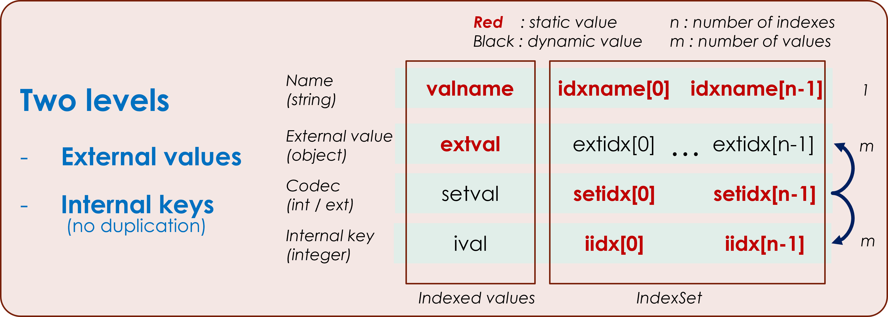

ES.ilist
Created on Sun Jan 2 18:30:14 2022
@author: Philippe@loco-labs.io
The ES.ilist module contains the Ilist class.
What is the Ilist Object ?
The Ilist Object is a combination of a set of data and properties (index) that describe it. In the example below, the set of data is scores of students and the properties are the name, the age and the subject.

The Ilist Object has many properties and can be converted into a matrix (e.g. numpy or Xarray object to perform statistical processing) or into several formats (e.g. json, csv).
The data model is as follows :

- the user data (extval, extidx) can be everything,
- the internal data (ival, iidx) are integers, which makes the processing to be performed much simpler
- the index user data (extidx) are dynamic to reduce the size of data.
Main principles
Index properties
There are 4 index categories :
- coupled index : two index are coupled if there is a 1-to-1 correspondence between each value
- derived index : two index are derived if there is a 1-to-n correspondence between each value
- unique index : the values of an index are identical
- independant index : if the index is not unique, not derived, not coupled
In the example below, 3 columns are independant (Full name, Course, Examen), 3 columns are derived (First name, Last name, Group), 1 column is coupled (Surname), 1 column is unique (Year).

If an index is not independant, values can be calculated from independent indexes. This property is very usefull if new values have to be added to the Ilist, for example, if i decide to have all the combinations of independant index.
In the example below, the 'full' method generates missing data for all combinations of independent indexes fullname, course and examen.

View Source
# -*- coding: utf-8 -*- """ Created on Sun Jan 2 18:30:14 2022 @author: Philippe@loco-labs.io The `ES.ilist` module contains the `Ilist` class. # What is the Ilist Object ? The Ilist Object is a combination of a set of data and properties (index) that describe it. In the example below, the set of data is scores of students and the properties are the name, the age and the subject. <img src="./ilist_example.png" width="500"> The Ilist Object has many properties and can be converted into a matrix (e.g. numpy or Xarray object to perform statistical processing) or into several formats (e.g. json, csv). <img src="./ilist_xarray.png" width="400"> The data model is as follows : <img src="./ilist_data_structure.png" width="500"> - the user data (extval, extidx) can be everything, - the internal data (ival, iidx) are integers, which makes the processing to be performed much simpler - the index user data (extidx) are dynamic to reduce the size of data. # Main principles ## Index properties There are 4 index categories : - coupled index : two index are coupled if there is a 1-to-1 correspondence between each value - derived index : two index are derived if there is a 1-to-n correspondence between each value - unique index : the values of an index are identical - independant index : if the index is not unique, not derived, not coupled In the example below, 3 columns are independant (Full name, Course, Examen), 3 columns are derived (First name, Last name, Group), 1 column is coupled (Surname), 1 column is unique (Year). <img src="./ilist_index.png" width="800"> If an index is not independant, values can be calculated from independent indexes. This property is very usefull if new values have to be added to the Ilist, for example, if i decide to have all the combinations of independant index. In the example below, the 'full' method generates missing data for all combinations of independent indexes fullname, course and examen. <img src="./ilist_full.png" width="800"> """ from itertools import product from copy import copy, deepcopy from datetime import datetime import json import csv import numpy as np import xarray def identity(*args, **kwargs): '''return the same value as args or kwargs''' if len(args) > 0 : return args[0] if len(kwargs) > 0 : return kwargs[list(kwargs.keys())[0]] return None class Ilist: ''' An `Ilist` is a representation of an indexed list (a list is indexed by others list). E.g. python zip or csv file. *Attributes (for @property see methods)* : - **extval** : list of data to be indexed - **valname** : name of the extval list - **setval** : list of the different extval values (dynamic value) - **ival** : index of the extval (dynamic value) - **extidx** : list of index (dynamic value) - **idxname** : list of the index name - **setidx** : list of the different idxval values - **iidx** : index of the extidx list of values The methods defined in this class are : *class methods (constructor)* - `Ilist.Idict` - `Ilist.Iset` - `Ilist.Iidx` - `Ilist.Iext` - `Ilist.Izip` - `Ilist.Icsv` *dynamic value property (getters)* - `Ilist.ival` - `Ilist.setval` - `Ilist.extidx` - `Ilist.tiidx` - `Ilist.textidx` *global property (getters)* - `Ilist.axes` - `Ilist.axesall` - `Ilist.axeslen` - `Ilist.axesmin` - `Ilist.complete` - `Ilist.consistent` - `Ilist.dimension` - `Ilist.lencomplete` - `Ilist.rate` - `Ilist.setvallen` - `Ilist.zip` *idx property (getters)* - `Ilist.idxcoupled` - `Ilist.idxderived` - `Ilist.idxlen` - `Ilist.idxref` - `Ilist.idxunique` - `Ilist.ind` - `Ilist.lenidx` - `Ilist.minMaxIndex` *add - update methods* - `Ilist.addextidx` - `Ilist.addlistidx` - `Ilist.append` - `Ilist.appendi` - `Ilist.updateidx` - `Ilist.updatelist` *selecting methods* - `Ilist.extidxtoi` - `Ilist.iidxtoext` - `Ilist.iloc` - `Ilist.isextIndex` - `Ilist.isiIndex` - `Ilist.isValue` - `Ilist.loc` *management - conversion methods* - `Ilist.full` - `Ilist.reindex` - `Ilist.reorder` - `Ilist.sort` - `Ilist.sortidx` - `Ilist.swapindex` *exports methods* - `Ilist.json` - `Ilist.to_csv` - `Ilist.to_numpy` - `Ilist.to_xarray` - `Ilist.vlist` ''' __slots__ = 'extval', 'iidx', 'setidx', 'valname', 'idxname' @classmethod # !!! class methods def Idict(cls, dictvaliidx, dictsetidx, order=[], idxref=[], defaultidx=True): ''' Ilist constructor (dictionnary data). *Parameters* - **dictvaliidx** : {valname : valiidx} with val=list(list(val, indexval)) - **dictsetidx** : {idxname0 : setidx0, ... , idxnamen : setidxn} - **order** : list (default []) of axes used if there is no indexval in valiidx - **idxref** : list (default []) of reference axes used if there is no indexval in valiidx - **defaultidx** : boolean (default True). If True, a generic index is generated if no index is defined *Returns* - **Ilist** ''' return cls(*Ilist._initdict(dictvaliidx, dictsetidx, order, idxref), defaultidx) @classmethod def Iset(cls, valiidx, setidx, order=[], idxref=[], valname='value', idxname=[], defaultidx=True): ''' Ilist constructor (list data with indexed values ). *Parameters* - **valiidx** : coupled val / index list : list(list(val, indexval)) - **setidx** : external different values of index (see data model) - **order** : list (default []) of axes used if there is no indexval in valiidx - **idxref** : list (default []) of reference axes used if there is no indexval in valiidx - **valname** : string (default 'value') name of indexed list (see data model) - **idxname** : list of string (default []) name of index list (see data model) - **defaultidx** : boolean (default True). If True, a generic index is generated if no index is defined *Returns* - **Ilist** ''' if not isinstance(valiidx, list) : validx = [valiidx] else : validx = valiidx (val, iidx) = Ilist._initset(validx, setidx, idxref, order) return cls(val, setidx, iidx, valname, idxname, defaultidx) @classmethod def Iidx(cls, extval, idxlen, idxref=[], order=[], valname='value', idxname=[], defaultidx=True): ''' Ilist constructor (automatic index). *Parameters* - **extval** : indexed list (see data model) - **idxlen** : integer - number of index - **idxref** : list (default []) of reference axes used - **order** : list (default []) of axes used to order the index - **valname** : string (default 'value') name of indexed list (see data model) - **idxname** : list of string (default []) name of index list (see data model) - **defaultidx** : boolean (default True). If True, a generic index is generated if no index is defined *Returns* - **Ilist** ''' iidx = Ilist._initiidx(len(extval), idxlen, idxref, order, defaultidx) return cls(extval, [], iidx, valname, idxname, defaultidx) @classmethod def Iext(cls, extval=[], extidx=[], valname='value', idxname=[], defaultidx=True): ''' Ilist constructor (external index). *Parameters* - **extval** : indexed list (see data model) - **extidx** : index list (see data model) - **valname** : string (default 'value') name of indexed list (see data model) - **idxname** : list of string (default []) name of index list (see data model) - **defaultidx** : boolean (default True). If True, a generic index is generated if no index is defined *Returns* - **Ilist** ''' if type(extval) != list and type(extidx) != list : return None if defaultidx and (type(extidx) != list or extidx == []) : ext = [list(range(len(extval)))] idxname = ['default index'] elif extidx != [] and type(extidx[0]) != list : ext = [extidx] else : ext = extidx setidx = [Ilist._toset(ind) for ind in ext] iidx = [Ilist._toint(ind, setind) for (ind, setind) in zip(ext, setidx)] return cls(extval, setidx, iidx, valname, idxname, defaultidx) @classmethod def Izip(cls, *args): ''' Ilist constructor (external index only). *Parameters* - **args** : index list extidx=list(args) (see data model) *Returns* - **Ilist** ''' return cls.Iext(extval=[], extidx=list(args), valname='value', idxname=[], defaultidx=True) @classmethod def Icsv(cls, filename='ilist.csv', valfirst=False, header=True, **kwargs): ''' Ilist constructor (from a csv file). Each column represents extidx or extval values. *Parameters* - **filename** : string (default 'ilist.csv'), name of the file to read - **valfirst** : boolean (default False). If False extval is the last columns else it's the first - **header** : boolean (default True). If True, the first raw is dedicated to names *Returns* - **Ilist** ''' extval=[] extidx=[] valname='value' idxname=[] with open(filename, newline='') as f: reader = csv.reader(f, **kwargs) first=True for row in reader: if first : for vrow in row[1:] : extidx.append([]) if first and header : if valfirst : valname = row[0] for vrow in row[1:] : idxname.append(vrow) else : valname = row[len(row)-1] for vrow in row[:len(row)-1] : idxname.append(vrow) else : if valfirst : extval.append(row[0]) for i in range(len(row)-1) : extidx[i].append(row[i+1]) else : extval.append(row[len(row)-1]) for i in range(len(row)-1) : extidx[i].append(row[i]) first = False return cls.Iext(extval, extidx, valname, idxname) def __init__(self, extval=[], setidx=[], iidx=[], valname='value', idxname=[], defaultidx=True): ''' Ilist constructor. *Parameters* - **extval** : list (default []) - indexed list (see data model) - **setidx** : list (default []) - external different values of index (see data model) - **iidx** : list (default []) - integer value of index (see data model) - **valname** : string (default 'value') - name of indexed list (see data model) - **idxname** : list of string (default []) - name of index list (see data model) - **defaultidx** : boolean (default True) - If True, a generic index is generated if no index is defined *Returns* : None''' if type(extval) != list and type(iidx) != list : return if defaultidx and (type(iidx) != list or iidx == []) : iindex = [list(range(len(extval)))] if idxname == [] : idxname = ['default index'] elif iidx != [] and type(iidx[0]) != list : iindex = [iidx] else : iindex = iidx if type(setidx) != list or setidx == [] : setindex = [Ilist._toset(idx) for idx in iindex] elif type(setidx[0]) != list : setindex = [setidx] else : setindex = setidx if type(extval) != list : extvalue = [extval] elif extval == [] and iindex == [] : extvalue = [] elif extval == [] and type(iindex[0]) == list: extvalue = [True for idx in iindex[0]] valname = 'default value' else : extvalue = extval self.extval = extvalue self.iidx = iindex self.setidx = setindex self.valname = valname self.idxname = ['idx' + str(i) for i in range(max(len(iindex), len(setindex)))] if type(idxname) == list : for i in range(len(idxname)) : if type(idxname[i]) == str : self.idxname[i] = idxname[i] @staticmethod def _initset(validx, setidx, idxref, order, defaultidx=True): ''' generate extval and iidx ''' if validx == [] : extval = [] iidx = [[] for i in setidx] elif type(validx[0]) != list : extval = validx idxlen = [len(ind) for ind in setidx] iidx = Ilist._initiidx(len(extval), idxlen, idxref, order, defaultidx) else : tvalidx = Ilist._transpose(validx) extval = tvalidx[0] iidx = Ilist._transpose(tvalidx[1]) return (extval, iidx) @staticmethod def _initdict(dictvaliidx, dictsetidx, order=[], idxref=[]): ''' generate extval, setidx, iidx, valname and idxname''' valname = 'value' validx = [] if len(dictvaliidx) == 1 : valname = list(dictvaliidx.keys())[0] validx = dictvaliidx[valname] setidx = [] idxname = [] for k,v in dictsetidx.items() : if type(v) == list : vl = v else : vl = [v] idxname.append(k) setidx.append(vl) (extval, iidx) = Ilist._initset(validx, setidx, idxref, order) return (extval, setidx, iidx, valname, idxname) @staticmethod def _initiidx(vallen, idxlen, idxref, order, defaultidx=True): ''' generate a generic iidx''' if idxlen == [] : return [] if idxlen == [0,0,0] : return [ [], [], [] ] if min(idxlen) == 0 : return [] if idxref == [] and defaultidx : ref = list(range(len(idxlen))) else : ref = idxref if order == [] : orde = list(range(len(idxlen))) else : orde = order if not len(idxlen) == len(ref): raise IlistError("idxref and idxlen should have the same lenght") idxcoupled = [i for i in range(len(idxlen)) if ref[i] != i] axes=list(set(ref)) axesord = [] for i in orde : iref = ref[i] if iref in axes and iref not in axesord : axesord.append(iref) for i in axes : if i not in axesord : axesord.append(i) iiord = [list(range(idxlen[i])) for i in axesord] iidxord = Ilist._transpose(list(product(*iiord))) if vallen != len(iidxord[0]): raise IlistError("val lenght is not consistent with index lenght") iidx = list(range(len(iidxord))) for i in axes : iidx[axes.index(i)] = iidxord[axesord.index(i)] for i in idxcoupled : iidx.insert(i,iidx[ref[i]]) return iidx def __repr__(self): ''' return ival and iidx''' texLis = '' for idx in self.iidx : texLis += '\n' + json.dumps(idx) return json.dumps(self.ival) + '\n' + texLis def __str__(self): ''' return valname, extval, idxname and extidx''' texLis = '' for (idx, nam) in zip(self.extidx, self.idxname) : texLis += '\n' + nam + ' : ' + self._json(idx, json_string=True) return self.valname + ' : ' + self._json(self.extval, json_string=True) + '\n' + texLis def __eq__(self, other): ''' equal if extval and extidx are equal''' try: return self.extval == other.extval and self.extidx == other.extidx except: return False def __len__(self): ''' len of extval''' return len(self.extval) def __contains__(self, item): ''' item of extval''' return item in self.extval def __getitem__(self, ind): ''' return extval item''' return self.extval[ind] def __setitem__(self, ind, val): ''' modify extval item''' if ind < 0 or ind >= len(self) : raise IlistError("out of bounds") self.extval[ind] = val def __add__(self, other): ''' Add other's values to self's values in a new Ilist''' newilist = self.__copy__() newilist.__iadd__(other) return newilist def __iadd__(self, other): ''' Add other's values to self's values''' return self.iadd(other, unique=True) def __or__(self, other): ''' Add other's index to self's index in a new Ilist''' newilist = self.__copy__() newilist.__ior__(other) return newilist def __ior__(self, other): ''' Add other's index to self's index''' if len(self) != len(other) : raise IlistError("the sizes are not equal") for i in range(other.lenidx): if other.idxname[i] not in self.idxname : self.addlistidx(other.idxname[i], other.setidx[i], other.iidx[i]) return self def __copy__(self): ''' Copy all the data (deepcopy)''' return deepcopy(self) @property # !!! property def axes(self): ''' return the list of independant axes (not coupled and not unique)''' axes = list(filter(lambda x: x >= 0, set(list(map( lambda x,y,z : -1 if (x <= 1 or y) else z, self.idxlen, self.idxcoupled, self.idxref))))) if self.lenidx > 0 and not axes : axes = [0] return axes @property def axesall(self): ''' return the list of all axes ''' return list(range(self.lenidx)) @property def axesmin(self): ''' return the list of independant axes (not coupled, not derived and not unique)''' axes = [] for i in range(self.lenidx): if not self.idxcoupled[i] and not self.idxunique[i] and not self.idxderived[i]: axes.append(i) if self.lenidx > 0 and not axes : axes = [0] return axes @property def axeslen(self): ''' return the list of axes lenght ''' return [self.idxlen[axe] for axe in self.axes] @property def complete(self): '''return a boolean (True if Ilist is complete and consistent)''' return self.lencomplete == len(self) and self.consistent @property def consistent(self): '''return a boolean (True if Ilist is consistent : only one extval for one list of index values''' return len(set(self._tuple(self.tiidx))) == len(self) @property def dimension(self): ''' return an integer : the number of index non coupled and non unique''' return len(self.axes) @property def extidx(self): '''return extidx (see data model)''' if len(self.iidx) == 0 : return [] return [ [self.setidx[i][self.iidx[i][j]] for j in range(len(self.iidx[i]))] for i in range(len(self.iidx))] @property def idxcoupled(self): '''return a list of boolean for each index (True if coupled)''' return [self.idxref[i] != i for i in range(self.lenidx)] @property def idxder(self): '''return the list of derived index''' lis = list(range(self.lenidx)) for i in range(len(lis)): for j in range(len(lis)): if i != j and self._derived(self.iidx[i], self.iidx[j]): lis[i] = j break return lis @property def idxderived(self): '''return a list of boolean for each index (True if derived)''' return [self.idxder[i] != i for i in range(self.lenidx)] @property def idxlen(self): ''' return the list of setidx lenght ''' return [len(seti) for seti in self.setidx] @property def idxref(self): '''return the list of reference index''' lis = list(range(self.lenidx)) for i in range(1,len(lis)): for j in range(i): if self._coupled(self.iidx[i], self.iidx[j]): lis[i] = j break return lis @property def idxunique(self): '''return a list of boolean for each index (True if unique)''' return [ idl == 1 for idl in self.idxlen] @property def ind(self): '''return the textidx (see data model)''' return self._transpose(self.extidx) @property def ival(self): '''return the ival (see data model)''' return self._toint(self.extval, self.setval) @property def lencomplete(self): ''' return an integer : number of values if complete (prod(idxlen,not coupled))''' return self._mul(list(map(lambda x,y: max((1-x)*y,1), self.idxcoupled, self.idxlen))) @property def lenidx(self): ''' return an integer : number of index''' return len(self.iidx) @property def minMaxIndex(self): ''' return a list : [ minimal value of index, maximal value of index]''' if self.lenidx == 0 or len(self) == 0 : return [None, None] maxInd = minInd = self.extidx[0][0] try: for idx in self.extidx: minInd = min(minInd, min(idx)) maxInd = max(maxInd, max(idx)) except: minInd = None maxInd = None return [minInd, maxInd] @property def rate(self): '''return the float ratio : len / lencomplete''' return len(self) / self.lencomplete @property def setval(self): '''return the setval (see data model)''' return self._toset(self.extval) @property def setvallen(self): ''' return the integer lenght of setval (see data model)''' return len(self.setval) @property def tiidx(self): '''return the tiidx (see data model)''' return self._transpose(self.iidx) @property def textidx(self): '''return the textidx (see data model)''' return self._transpose(self.extidx) @property def zip(self): '''return a zip format for textidx : tuple(tuple(idx)''' return tuple(tuple(idx) for idx in self.textidx) def addextidx(self, idxname, extidx): # !!! methods ''' add a new index with name = idxname and extidx. *Parameters* - **idxname** : string - name of index list (see data model) - **extidx** : list - new index list (see data model) *Returns* : none ''' self.addlistidx(idxname, self._toset(extidx), self._toint(extidx, self._toset(extidx))) def addlistidx(self, idxname, setidx, iidx): ''' add a new index with name = idxname and setidx / iidx. *Parameters* - **idxname** : string - name of index list (see data model) - **setidx** : list - external different values of index (see data model) - **iidx** : list - integer value of index (see data model) *Returns* : none ''' if type(iidx) != list or len(iidx) != len(self): raise IlistError("listindex out of bounds") if self.lenidx == 1 and self.iidx[0] == list(range(len(self))) : self.setidx[0] = setidx self.iidx[0] = iidx self.idxname[0] = idxname else : self.setidx .append(setidx) self.iidx .append(iidx) self.idxname.append(idxname) def append(self, extval, extind, unique=False): ''' add a new value extval with index extind. *Parameters* - **extval** : new object value - **extind** : list - new index values to add to extidx - **unique** : boolean (default False) - If True and extidx present in textidx append is refuse. *Returns* : none ''' if not ((self.isextIndex(extind) and unique) or (self.isValue(extval) and self.isextIndex(extind))): self.extval.append(extval) tiidx = self.tiidx tiidx.append(self._updateset(extind)) self.iidx = self._transpose(tiidx) def appendi(self, extval, intind, unique=False): ''' add a new value extval with index intind. *Parameters* - **extval** : new object value - **intind** : list - new index values to add to iidx - **unique** : boolean (default False) - If True and intind present in tiidx append is refuse. *Returns* : none ''' if not ((self.isiIndex(intind) and unique) or (self.isValue(extval) and self.isiIndex(intind))): self.extval.append(extval) tiidx = self.tiidx tiidx.append(intind) self.iidx = self._transpose(tiidx) def extidxtoi(self, extind): ''' convert an extind (value for each extidx) to an intind (value for each iidx). *Parameters* - **extind** : value for each extidx *Returns* - **list** : intind, value for each iidx''' try : return [self.setidx[i].index(extind[i]) for i in range(len(extind))] except : return None def full(self, axes=[], fillvalue=None, inplace=False): ''' add new extval with new extidx to have a complet Ilist *Parameters* - **axes** : list (default []) - list of index to be completed. If [], self.axes is used. - **fillvalue** : object value used for the new extval - **inplace** : boolean (default True) - if True, new values are added, if False a new Ilist is created. *Returns* - **None, if inplace. Ilist if not inplace**''' if not self.consistent : raise IlistError("unable to generate full Ilist with inconsistent Ilist") if axes==[] : axe = self.axes else: axe = axes tiidxfull = self.tiidx extvalfull = copy(self.extval) for ind in self._transpose(self._idxfull(axes=axe)) : if ind not in tiidxfull : tiidxfull.append(ind) extvalfull.append(self._nullValue(type(extvalfull[0]), fillvalue)) iidxfull = self._transpose(tiidxfull) if inplace : self.extval = extvalfull self.iidx = iidxfull return None return Ilist(extvalfull, self.setidx, iidxfull, self.valname, self.idxname) def iadd(self, other, unique=False): ''' Add other's values to self's values *Parameters* - **other** : Ilist to be copied - **unique** : boolean (default False) - If True and iidx present in tiidx, append is refuse. *Returns* : None''' if self.lenidx != other.lenidx : raise IlistError("the index lenght have to be equal") for val,extidx in zip(other.extval, other.textidx) : self.append(val, extidx, unique) for i in range(self.lenidx) : if self.idxname[i][0:3] == 'idx' and other.idxname[i][0:3] != 'idx' : self.idxname[i] = other.idxname[i] if self.valname[0:5] == 'value' and other.valname[0:5] != 'value' : self.valname = other.valname return self def iidxtoext(self, intind): ''' convert an intind (value for each iidx) to an extind (value for each extidx). *Parameters* - **intind** : value for each iidx *Returns* - **list** : extind, value for each extidx''' try : return [self.setidx[i][intind[i]] for i in range(len(intind))] except : return None def iloc(self, intind): ''' Return extval corresponding to intind. *Parameters* - **intind** : list - value for each iidx *Returns* - **object** : extval value ''' try : ival = self.tiidx.index(intind) except : raise IlistError('index not found') return self.extval[ival] def isextIndex(self, extind): ''' Return True if extind is present in extidx. *Parameters* - **extind** : list - value for each extidx *Returns* : boolean - True if found''' intind = self.extidxtoi(extind) if intind is not None and intind in self.tiidx : return True return False def isiIndex(self, intind): ''' Return True if intind is present in iidx. *Parameters* - **intind** : list - value for each iidx *Returns* : boolean - True if found''' if intind is not None and intind in self.tiidx : return True return False def isValue(self, extval): ''' Return True if present in extval. *Parameters* - **extval** : value to test *Returns* : boolean - True if found''' if extval in self.extval : return True return False def json(self, **option): ''' Return json string with val (extval or ival) and idx (extidx or iidx or none). *Parameters (option)* - **json_string** : defaut False - if True return string, else return dict - **json_res_index** : default True - if True add the index to the value - **json_mode** : string (default 'vv') - **json_mode[0]** : char - if 'v', value is extval else ival - **json_mode[1]** : char - if 'v', index is extidx else iidx *Returns* : string or dict''' option2 = {'json_string' : False, 'json_res_index' :True, 'json_mode' :'vv'} | option lis = [] textidx = [] if option2['json_mode'][1]=='v' and self.extidx == [] : lis = [self.valname] elif option2['json_mode'][1]=='v' and self.extidx != []: lis=[[self.valname, self.idxname]] textidx = self._transpose(self.extidx) for i in range(len(self)): if option2['json_mode'][0]=='v' : jval = self._json(self.extval[i]) else : jval = self.ival[i] if not option2['json_res_index'] or self.tiidx == [] : lis.append(jval) else : lig=[jval] if option2['json_mode'][1]=='v' : lig.append(textidx[i]) else : lig.append(self.tiidx[i]) lis.append(lig) if option2['json_mode'][1]=='v': js = lis else : js = {} for i in range(len(self.setidx)) : if self.idxlen[i] > 0 : js[self.idxname[i]] = self.setidx[i] if len(lis) > 1 : js[self.valname] = lis if option2['json_string']: return json.dumps(js) return js def loc(self, extind): ''' Return extval corresponding to extind. *Parameters* - **extind** : list - value for each extidx *Returns* - **object** : extval value ''' intind = self.extidxtoi(extind) try : ival = self.tiidx.index(intind) except : raise IlistError('index not found') return self.extval[ival] def reindex(self, index = []): ''' Define new sorted index. *Parameters* - **index** : list (default [])- list of the index to reindex. If [] all the index are reindexed. *Returns* : None''' if index == [] : index = list(range(len(self.setidx))) for ind in index : oldidx = self.setidx[ind] self.setidx[ind] = sorted(self.setidx[ind]) self.iidx[ind] = Ilist._reindexidx(self.iidx[ind], oldidx, self.setidx[ind]) def reorder(self, sort=[], inplace=True): ''' Change the order of extval and iidx with a new order define by sort. *Parameters* - **sort** : list (default [])- new order to apply. If [], no change. - **inplace** : boolean (default True) - if True, new order is apply to self, if False a new Ilist is created. *Returns* - **None, if inplace. Ilist if not inplace**''' extval = self._reorder(self.extval, sort) iidx = [self._reorder(idx, sort) for idx in self.iidx] if inplace : self.extval = extval self.iidx = iidx return None return Ilist(extval, self.setidx, iidx, self.valname, self.idxname) def sort(self, sort=[], order=[], reindex=True, inplace=True): ''' sort : calculate a new list order''' return self.reorder(self.sortidx(order, sort, reindex), inplace) def sortidx(self, order=[], sort=[], reindex=True): ''' Define a new order to apply to extval and iidx (reorder method). *Parameters* - **order** : list (default [])- new order of index to apply in sort function. If [], the sort function is applied to extval. - **sort** : list (default [])- new order to apply. If [], the new order is calculated. - **reindex** : boolean (default True) - if True, the index are reindexed. *Returns* - **list** : sort - new order to apply''' if sorted(sort) == sorted(self.extval): return sort newsetidx = [sorted(self.setidx[ind]) for ind in range(len(self.setidx))] newiidx = [Ilist._reindexidx(self.iidx[ind], self.setidx[ind], newsetidx[ind]) for ind in range(len(self.setidx))] if reindex : self.iidx = newiidx self.setidx = newsetidx if len(order) < 1 or len(order) > self.lenidx or max(order) >= self.lenidx : idx = [] else : idx = [newiidx[ind] for ind in order] idx.append(self.extval) idx.append(list(range(len(self)))) return self._transpose(sorted(self._transpose(idx)))[len(order)+1] def swapindex(self, order): ''' Change the order of the index (iidx, setidx, idxname). *Parameters* - **order** : list - new order of index to apply. *Returns* : none ''' if not isinstance(order, list) or len(order) != self.lenidx : raise IlistError("order lenght not correct") iidx = [] setidx = [] idxname = [] for i in order : iidx.append (self.iidx [i]) setidx.append(self.setidx[i]) idxname.append(self.idxname[i]) self.iidx = iidx self.setidx = setidx self.idxname = idxname def to_csv(self, filename='ilist.csv', func=None, ifunc=[], valfirst=False, order=[], header=True, **kwargs): ''' Generate a csv file with Ilist data (a column for extval and each extidx) *Parameters* - **filename** : string (default 'ilist.csv') - name of the file to create - **func** : function (default none) - function to apply to extval before writting csv file - **ifunc** : list of function (default []) - function to apply to extidx before writting csv file - **valfirst** : boolean (default False). If False extval is the last columns, else it's the first - **order** : list of integer (default []) - ordered list of index in columns - **header** : boolean (default True). If True, the first raw is dedicated to names - **kwargs** : parameter for csv.writer or func *Returns* : none ''' if order == [] : order = list(range(self.lenidx)) with open(filename, 'w', newline='') as f: writer = csv.writer(f, quoting=csv.QUOTE_NONNUMERIC, **kwargs) if header: row = [] if valfirst : row.append(self.valname) for idx in order : row.append(self.idxname[idx]) if not valfirst : row.append(self.valname) writer.writerow(row) for i in range(len(self)): row = [] if len(ifunc) == len(self) : funci = func[i] else : funci = None if valfirst : row.append(self._funclist(self.extval[i], func, **kwargs)) for idx in order : row.append(self._funclist(self.extidx[idx][i], funci, **kwargs)) if not valfirst : row.append(self._funclist(self.extval[i], func, **kwargs)) writer.writerow(row) def to_numpy(self, func=None, ind='axe', fillvalue='?', **kwargs): ''' Complete the Ilist and generate a Numpy array with the dimension define by ind. *Parameters* - **func** : function (default none) - function to apply to extval before export - **ind** : string (default 'axe') - 'axe' -> independant axes, 'all' -> all axes, 'flat' -> one list - **fillvalue** : object (default '?') - value used for the new extval - **kwargs** : parameter for func *Returns* : none ''' if not self.consistent : raise IlistError("unable to generate numpy array with inconsistent Ilist") if isinstance(ind, str) and ind == 'flat' : return self._tonumpy(self.extval, func=func, **kwargs) if isinstance(ind, str) and ind in ['axe', 'all'] : if ind == 'axe' : axes = [] else : axes = list(range(self.lenidx)) ilf = self.full(axes=axes, fillvalue=fillvalue) ilf.sort(order=self.axes) return self._tonumpy(ilf.extval, func=func, **kwargs).reshape(ilf.axeslen) return None def to_xarray(self, info=False, axes=[], fillvalue='?', func=None, ifunc=[], name='Ilist', **kwargs): ''' Complete the Ilist and generate a Xarray DataArray with the dimension define by ind. *Parameters* - **info** : boolean (default False) - if True, add _dict attributes to attrs Xarray - **axes** : list (default []) - list of index to be completed. If [], self.axes is used. - **fillvalue** : object (default '?') - value used for the new extval - **func** : function (default none) - function to apply to extval before export - **ifunc** : list of function (default []) - function to apply to extidx before export - **name** : string (default 'Ilist') - DataArray name - **kwargs** : parameter for func and ifunc *Returns* : none ''' if not self.consistent : raise IlistError("Ilist not consistent") if axes==[] : axe = self.axes else: axe = axes ilf = self.full(axes=axe, fillvalue=fillvalue) ilf.sort(order=axe) coord = ilf._xcoord(ifunc, **kwargs) dims = [ilf.idxname[ax] for ax in axe] data = ilf._tonumpy(ilf.extval, func=func, **kwargs).reshape([ilf.idxlen[idx] for idx in axe]) if info : return xarray.DataArray(data, coord, dims, attrs=ilf._dict(), name=name) return xarray.DataArray(data, coord, dims, name=name) def updateidx(self, indval, extind, unique=False): ''' Update the index of an extval. *Parameters* - **indval** : integer - row of the value in extval - **extind** : list - new value for each extidx - **unique** : boolean (default False) - If True and extind present in textidx, update is refuse. *Returns* : none''' if len(extind) != self.lenidx or indval < 0 or indval >= len(self) : raise IlistError("out of bounds") if self.isextIndex(extind) and unique : return tiidx = self.tiidx tiidx[indval] = self._updateset(extind) self.iidx = self._transpose(tiidx) def updatelist(self, extlist, idx=None): ''' Update extval or extidx. *Parameters* - **extlist** : list of list - list of values to update - **idx** : list of integer - list of index to update (idx=-1 for extval) *Returns* : none''' extlis, index = self._checkidxlist(extlist, idx) for ind in extlis : if len(ind) != len(self) : raise IlistError("out of bounds") for (ind, extl) in zip(index, extlis) : if ind == -1 : self.extval = extl else : self.setidx[ind] = self._toset(extl) self.iidx[ind] = self._toint(extl, self.setidx[ind]) def vlist(self, *args, func=None, idx=None, **kwargs): ''' Apply a function to extval or extidx and return the result. *Parameters* - **func** : function (default none) - function to apply to extval or extidx - **args, kwargs** : parameters for the function - **idx** : integer - index to update (idx=-1 for extval) *Returns* : list of func result''' index = self._checkidxlist(None, idx)[0] if index == -1 : return self._funclist(self.extval, func, *args, **kwargs) return self._funclist(self.extidx[index], func, *args, **kwargs) def _checkidxlist(self, listidx, idx): # !!! # idx=-1 -> val if isinstance(idx, int) : index = [idx] elif idx is None : index = [-1] else : index = idx if min(index) < -1 or max(index) >= self.lenidx : raise IlistError("index out of bounds") if listidx is None : return index if not isinstance(listidx, list) : raise IlistError("listindex not a list") if type(listidx[0]) != list : listindex = [listidx] else : listindex = listidx if len(index) != len(listindex) : raise IlistError("listindex out of bounds") return (listindex, index) @staticmethod def _coupled(ref, l2): '''return boolean if l2 is coupled to ref''' return len(Ilist._idxlink(ref, l2)) == len(set(ref)) @staticmethod def _derived(ref, l2): '''return boolean if ref is derived from l2''' lis = set(Ilist._tuple(Ilist._transpose([ref, l2]))) return len(lis) == len(set(l2)) and len(set(ref)) < len(set(l2)) def _dict(self, addproperty=True, long=False): '''return the value of the properties''' dic = {'valname' : self.valname, 'idxname' : self.idxname} if long : dic |= {'extval' : self.extval, 'iidx' : self.iidx, 'setidx' : self.setidx } if addproperty : dic |= {'axes':self.axes, 'axesall':self.axesall, 'axeslen':self.axeslen, 'axesmin':self.axesmin, 'complete':self.complete, 'consistent':self.consistent, 'dimension':self.dimension, 'idxcoupled':self.idxcoupled, 'idxderived':self.idxderived, 'idxlen':self.idxlen, 'idxunique':self.idxunique, 'idxder':self.idxder, 'idxref':self.idxref, 'lencomplete':self.lencomplete, 'lenidx':self.lenidx, 'minMaxIndex':self.minMaxIndex, 'rate':self.rate, 'setvallen':self.setvallen } if long : dic |= { 'extidx':self.extidx, 'ind':self.ind, 'ival':self.ival, 'setval':self.setval, 'tiidx':self.tiidx, 'textidx':self.textidx} return dic @staticmethod def _funclist(value, func, *args, **kwargs): '''return the function func applied to the object value with parameters args and kwargs''' if func in (None, []) : return value lis = [] if type(value) != list : listval = [value] else : listval = value for val in listval : try : lis.append(val.func(*args, **kwargs)) except : try : lis.append(func(val, *args, **kwargs)) except : try : lis.append(listval.func(val, *args, **kwargs)) except : try : lis.append(func(listval, val, *args, **kwargs)) except : raise IlistError("unable to apply func") if len(lis) == 1 : return lis[0] return lis def _idxfull(self, axes=[]): '''return iidx with full index in the axes''' if axes==[] : axe = [i for i in range(self.lenidx) if not self.idxcoupled[i]] else : axe = axes iidxr = [set(self.iidx[i]) for i in axe] nidx = self._transpose(list(product(*iidxr))) # iidx rduit aux axes et complet iidxfull = [[] for i in range(self.lenidx)] for idx in range(self.lenidx): if idx in axe : iidxfull[idx] = nidx[axe.index(idx)] elif idx not in axe and self.idxcoupled[idx] : dic = self._idxlink(self.iidx[self.idxref[idx]], self.iidx[idx]) iidxfull[idx] = [dic[i] for i in nidx[axe.index(self.idxref[idx])]] elif idx not in axe and not self.idxcoupled[idx] and \ not self.idxunique[idx] and self.idxderived[idx] : dic = self._idxlink(self.iidx[self.idxder[idx]], self.iidx[idx], coupled=False) iidxfull[idx] = [dic[i] for i in nidx[axe.index(self.idxder[idx])]] elif idx not in axe and not self.idxcoupled[idx] and \ self.idxunique[idx] : iidxfull[idx] = [self.iidx[idx][0] for i in range(len(nidx[0]))] else : raise IlistError("index : " + str(idx) + " have to be in axes" ) return iidxfull @staticmethod def _idxlink(ref, l2, coupled=True): ''' return dic ={ref i : l2 i} pour chaque tuple diffrent''' lis = set(Ilist._tuple(Ilist._transpose([ref, l2]))) if coupled and not len(lis) == len(set(ref)) == len(set(l2)) : return {} return dict(lis) @staticmethod def _index(idx, val): '''return the index of val in idx''' return idx.index(val) @staticmethod def _json(val, json_string=False): '''return the json format of val (if function json() or to_json() exists''' if type(val) in [str, int, float, bool, tuple, list] : if json_string : return json.dumps(val) return val try : return val.json(json_string=json_string) except : return val.to_json(json_string=json_string) @staticmethod def _list(idx): return list(map(list, idx)) @staticmethod def _mul(val): mul = 1 for v in val : mul *= v return mul @staticmethod def _nullValue(Class, fillvalue): if isinstance(fillvalue, Class) : return fillvalue if Class == int : return 0 if Class == float : return float("nan") if Class == str : return '-' if Class == bool : return False return Class() @staticmethod def _reindexidx(iidx, setidx, newsetidx) : return [newsetidx.index(setidx[indb]) for indb in iidx] @staticmethod def _reorder(val, sort=[]): if sort == [] : return val return [val[ind] for ind in sort] @staticmethod def _setable(extv): try : set(extv) return extv except : return Ilist._tuple(extv) @staticmethod def _toint(extv, extset): ext = Ilist._setable(extv) return [extset.index(val) for val in ext] def _toival(self, extval): return self.setval.index(extval) @staticmethod def _toext(iidx, extset): return [extset[idx] for idx in iidx] @staticmethod def _tonumpy(lis, func=identity, **kwargs): if func is None : func = identity if func == 'index' : return np.array(list(range(len(lis)))) valList = Ilist._funclist(lis, func, **kwargs) if type(valList[0]) == str : try : datetime.fromisoformat(valList[0]) except : return np.array(valList) return np.array(valList, dtype=np.datetime64) if type(valList[0]) == datetime : return np.array(valList, dtype=np.datetime64) return np.array(valList) @staticmethod def _toset(extv): ext = Ilist._setable(extv) return list(set(ext)) @staticmethod def _transpose(idx): if type(idx) != list : raise IlistError('index not transposable') if idx == [] : return [] return [[ix[ind] for ix in idx] for ind in range(len(idx[0]))] @staticmethod def _tuple(idx): return list(map(tuple, idx)) def _updateset(self, extidx): # ajouter la fin un recalcul de iidx en fonction de sorted(extset) iidx = [] for i in range(len(extidx)): if len(self.setidx) == i : self.setidx.append([]) if extidx[i] not in self.setidx[i] : self.setidx[i].append(extidx[i]) iidx.append(self.setidx[i].index(extidx[i])) return iidx def _xcoord(self, funcidx=[], **kwargs) : ''' Coords generation for Xarray''' coord = {} for i in range(self.lenidx): if self.idxunique[i] : continue if funcidx==[] : funci=identity else : funci= funcidx[i] if self.idxcoupled[i] : xlisti = self._tonumpy(self._xderived(i, self.idxref[i]), func=funci, **kwargs) coord[self.idxname[i]] = (self.idxname[self.idxref[i]], xlisti) elif self.idxderived[i] : xlisti = self._tonumpy(self._xderived(i, self.idxder[i]), func=funci, **kwargs) coord[self.idxname[i]] = (self.idxname[self.idxder[i]], xlisti) else : xlisti = self._tonumpy(self.setidx[i], func=funci, **kwargs) coord[self.idxname[i]] = xlisti return coord def _xderived(self, idxder, idxori) : dic = self._idxlink(self.extidx[idxori], self.extidx[idxder], coupled=False) return [dic[i] for i in self.setidx[idxori]] class IlistError(Exception): ''' Ilist Exception''' #pass
View Source
def identity(*args, **kwargs): '''return the same value as args or kwargs''' if len(args) > 0 : return args[0] if len(kwargs) > 0 : return kwargs[list(kwargs.keys())[0]] return None
return the same value as args or kwargs
View Source
class Ilist: ''' An `Ilist` is a representation of an indexed list (a list is indexed by others list). E.g. python zip or csv file. *Attributes (for @property see methods)* : - **extval** : list of data to be indexed - **valname** : name of the extval list - **setval** : list of the different extval values (dynamic value) - **ival** : index of the extval (dynamic value) - **extidx** : list of index (dynamic value) - **idxname** : list of the index name - **setidx** : list of the different idxval values - **iidx** : index of the extidx list of values The methods defined in this class are : *class methods (constructor)* - `Ilist.Idict` - `Ilist.Iset` - `Ilist.Iidx` - `Ilist.Iext` - `Ilist.Izip` - `Ilist.Icsv` *dynamic value property (getters)* - `Ilist.ival` - `Ilist.setval` - `Ilist.extidx` - `Ilist.tiidx` - `Ilist.textidx` *global property (getters)* - `Ilist.axes` - `Ilist.axesall` - `Ilist.axeslen` - `Ilist.axesmin` - `Ilist.complete` - `Ilist.consistent` - `Ilist.dimension` - `Ilist.lencomplete` - `Ilist.rate` - `Ilist.setvallen` - `Ilist.zip` *idx property (getters)* - `Ilist.idxcoupled` - `Ilist.idxderived` - `Ilist.idxlen` - `Ilist.idxref` - `Ilist.idxunique` - `Ilist.ind` - `Ilist.lenidx` - `Ilist.minMaxIndex` *add - update methods* - `Ilist.addextidx` - `Ilist.addlistidx` - `Ilist.append` - `Ilist.appendi` - `Ilist.updateidx` - `Ilist.updatelist` *selecting methods* - `Ilist.extidxtoi` - `Ilist.iidxtoext` - `Ilist.iloc` - `Ilist.isextIndex` - `Ilist.isiIndex` - `Ilist.isValue` - `Ilist.loc` *management - conversion methods* - `Ilist.full` - `Ilist.reindex` - `Ilist.reorder` - `Ilist.sort` - `Ilist.sortidx` - `Ilist.swapindex` *exports methods* - `Ilist.json` - `Ilist.to_csv` - `Ilist.to_numpy` - `Ilist.to_xarray` - `Ilist.vlist` ''' __slots__ = 'extval', 'iidx', 'setidx', 'valname', 'idxname' @classmethod # !!! class methods def Idict(cls, dictvaliidx, dictsetidx, order=[], idxref=[], defaultidx=True): ''' Ilist constructor (dictionnary data). *Parameters* - **dictvaliidx** : {valname : valiidx} with val=list(list(val, indexval)) - **dictsetidx** : {idxname0 : setidx0, ... , idxnamen : setidxn} - **order** : list (default []) of axes used if there is no indexval in valiidx - **idxref** : list (default []) of reference axes used if there is no indexval in valiidx - **defaultidx** : boolean (default True). If True, a generic index is generated if no index is defined *Returns* - **Ilist** ''' return cls(*Ilist._initdict(dictvaliidx, dictsetidx, order, idxref), defaultidx) @classmethod def Iset(cls, valiidx, setidx, order=[], idxref=[], valname='value', idxname=[], defaultidx=True): ''' Ilist constructor (list data with indexed values ). *Parameters* - **valiidx** : coupled val / index list : list(list(val, indexval)) - **setidx** : external different values of index (see data model) - **order** : list (default []) of axes used if there is no indexval in valiidx - **idxref** : list (default []) of reference axes used if there is no indexval in valiidx - **valname** : string (default 'value') name of indexed list (see data model) - **idxname** : list of string (default []) name of index list (see data model) - **defaultidx** : boolean (default True). If True, a generic index is generated if no index is defined *Returns* - **Ilist** ''' if not isinstance(valiidx, list) : validx = [valiidx] else : validx = valiidx (val, iidx) = Ilist._initset(validx, setidx, idxref, order) return cls(val, setidx, iidx, valname, idxname, defaultidx) @classmethod def Iidx(cls, extval, idxlen, idxref=[], order=[], valname='value', idxname=[], defaultidx=True): ''' Ilist constructor (automatic index). *Parameters* - **extval** : indexed list (see data model) - **idxlen** : integer - number of index - **idxref** : list (default []) of reference axes used - **order** : list (default []) of axes used to order the index - **valname** : string (default 'value') name of indexed list (see data model) - **idxname** : list of string (default []) name of index list (see data model) - **defaultidx** : boolean (default True). If True, a generic index is generated if no index is defined *Returns* - **Ilist** ''' iidx = Ilist._initiidx(len(extval), idxlen, idxref, order, defaultidx) return cls(extval, [], iidx, valname, idxname, defaultidx) @classmethod def Iext(cls, extval=[], extidx=[], valname='value', idxname=[], defaultidx=True): ''' Ilist constructor (external index). *Parameters* - **extval** : indexed list (see data model) - **extidx** : index list (see data model) - **valname** : string (default 'value') name of indexed list (see data model) - **idxname** : list of string (default []) name of index list (see data model) - **defaultidx** : boolean (default True). If True, a generic index is generated if no index is defined *Returns* - **Ilist** ''' if type(extval) != list and type(extidx) != list : return None if defaultidx and (type(extidx) != list or extidx == []) : ext = [list(range(len(extval)))] idxname = ['default index'] elif extidx != [] and type(extidx[0]) != list : ext = [extidx] else : ext = extidx setidx = [Ilist._toset(ind) for ind in ext] iidx = [Ilist._toint(ind, setind) for (ind, setind) in zip(ext, setidx)] return cls(extval, setidx, iidx, valname, idxname, defaultidx) @classmethod def Izip(cls, *args): ''' Ilist constructor (external index only). *Parameters* - **args** : index list extidx=list(args) (see data model) *Returns* - **Ilist** ''' return cls.Iext(extval=[], extidx=list(args), valname='value', idxname=[], defaultidx=True) @classmethod def Icsv(cls, filename='ilist.csv', valfirst=False, header=True, **kwargs): ''' Ilist constructor (from a csv file). Each column represents extidx or extval values. *Parameters* - **filename** : string (default 'ilist.csv'), name of the file to read - **valfirst** : boolean (default False). If False extval is the last columns else it's the first - **header** : boolean (default True). If True, the first raw is dedicated to names *Returns* - **Ilist** ''' extval=[] extidx=[] valname='value' idxname=[] with open(filename, newline='') as f: reader = csv.reader(f, **kwargs) first=True for row in reader: if first : for vrow in row[1:] : extidx.append([]) if first and header : if valfirst : valname = row[0] for vrow in row[1:] : idxname.append(vrow) else : valname = row[len(row)-1] for vrow in row[:len(row)-1] : idxname.append(vrow) else : if valfirst : extval.append(row[0]) for i in range(len(row)-1) : extidx[i].append(row[i+1]) else : extval.append(row[len(row)-1]) for i in range(len(row)-1) : extidx[i].append(row[i]) first = False return cls.Iext(extval, extidx, valname, idxname) def __init__(self, extval=[], setidx=[], iidx=[], valname='value', idxname=[], defaultidx=True): ''' Ilist constructor. *Parameters* - **extval** : list (default []) - indexed list (see data model) - **setidx** : list (default []) - external different values of index (see data model) - **iidx** : list (default []) - integer value of index (see data model) - **valname** : string (default 'value') - name of indexed list (see data model) - **idxname** : list of string (default []) - name of index list (see data model) - **defaultidx** : boolean (default True) - If True, a generic index is generated if no index is defined *Returns* : None''' if type(extval) != list and type(iidx) != list : return if defaultidx and (type(iidx) != list or iidx == []) : iindex = [list(range(len(extval)))] if idxname == [] : idxname = ['default index'] elif iidx != [] and type(iidx[0]) != list : iindex = [iidx] else : iindex = iidx if type(setidx) != list or setidx == [] : setindex = [Ilist._toset(idx) for idx in iindex] elif type(setidx[0]) != list : setindex = [setidx] else : setindex = setidx if type(extval) != list : extvalue = [extval] elif extval == [] and iindex == [] : extvalue = [] elif extval == [] and type(iindex[0]) == list: extvalue = [True for idx in iindex[0]] valname = 'default value' else : extvalue = extval self.extval = extvalue self.iidx = iindex self.setidx = setindex self.valname = valname self.idxname = ['idx' + str(i) for i in range(max(len(iindex), len(setindex)))] if type(idxname) == list : for i in range(len(idxname)) : if type(idxname[i]) == str : self.idxname[i] = idxname[i] @staticmethod def _initset(validx, setidx, idxref, order, defaultidx=True): ''' generate extval and iidx ''' if validx == [] : extval = [] iidx = [[] for i in setidx] elif type(validx[0]) != list : extval = validx idxlen = [len(ind) for ind in setidx] iidx = Ilist._initiidx(len(extval), idxlen, idxref, order, defaultidx) else : tvalidx = Ilist._transpose(validx) extval = tvalidx[0] iidx = Ilist._transpose(tvalidx[1]) return (extval, iidx) @staticmethod def _initdict(dictvaliidx, dictsetidx, order=[], idxref=[]): ''' generate extval, setidx, iidx, valname and idxname''' valname = 'value' validx = [] if len(dictvaliidx) == 1 : valname = list(dictvaliidx.keys())[0] validx = dictvaliidx[valname] setidx = [] idxname = [] for k,v in dictsetidx.items() : if type(v) == list : vl = v else : vl = [v] idxname.append(k) setidx.append(vl) (extval, iidx) = Ilist._initset(validx, setidx, idxref, order) return (extval, setidx, iidx, valname, idxname) @staticmethod def _initiidx(vallen, idxlen, idxref, order, defaultidx=True): ''' generate a generic iidx''' if idxlen == [] : return [] if idxlen == [0,0,0] : return [ [], [], [] ] if min(idxlen) == 0 : return [] if idxref == [] and defaultidx : ref = list(range(len(idxlen))) else : ref = idxref if order == [] : orde = list(range(len(idxlen))) else : orde = order if not len(idxlen) == len(ref): raise IlistError("idxref and idxlen should have the same lenght") idxcoupled = [i for i in range(len(idxlen)) if ref[i] != i] axes=list(set(ref)) axesord = [] for i in orde : iref = ref[i] if iref in axes and iref not in axesord : axesord.append(iref) for i in axes : if i not in axesord : axesord.append(i) iiord = [list(range(idxlen[i])) for i in axesord] iidxord = Ilist._transpose(list(product(*iiord))) if vallen != len(iidxord[0]): raise IlistError("val lenght is not consistent with index lenght") iidx = list(range(len(iidxord))) for i in axes : iidx[axes.index(i)] = iidxord[axesord.index(i)] for i in idxcoupled : iidx.insert(i,iidx[ref[i]]) return iidx def __repr__(self): ''' return ival and iidx''' texLis = '' for idx in self.iidx : texLis += '\n' + json.dumps(idx) return json.dumps(self.ival) + '\n' + texLis def __str__(self): ''' return valname, extval, idxname and extidx''' texLis = '' for (idx, nam) in zip(self.extidx, self.idxname) : texLis += '\n' + nam + ' : ' + self._json(idx, json_string=True) return self.valname + ' : ' + self._json(self.extval, json_string=True) + '\n' + texLis def __eq__(self, other): ''' equal if extval and extidx are equal''' try: return self.extval == other.extval and self.extidx == other.extidx except: return False def __len__(self): ''' len of extval''' return len(self.extval) def __contains__(self, item): ''' item of extval''' return item in self.extval def __getitem__(self, ind): ''' return extval item''' return self.extval[ind] def __setitem__(self, ind, val): ''' modify extval item''' if ind < 0 or ind >= len(self) : raise IlistError("out of bounds") self.extval[ind] = val def __add__(self, other): ''' Add other's values to self's values in a new Ilist''' newilist = self.__copy__() newilist.__iadd__(other) return newilist def __iadd__(self, other): ''' Add other's values to self's values''' return self.iadd(other, unique=True) def __or__(self, other): ''' Add other's index to self's index in a new Ilist''' newilist = self.__copy__() newilist.__ior__(other) return newilist def __ior__(self, other): ''' Add other's index to self's index''' if len(self) != len(other) : raise IlistError("the sizes are not equal") for i in range(other.lenidx): if other.idxname[i] not in self.idxname : self.addlistidx(other.idxname[i], other.setidx[i], other.iidx[i]) return self def __copy__(self): ''' Copy all the data (deepcopy)''' return deepcopy(self) @property # !!! property def axes(self): ''' return the list of independant axes (not coupled and not unique)''' axes = list(filter(lambda x: x >= 0, set(list(map( lambda x,y,z : -1 if (x <= 1 or y) else z, self.idxlen, self.idxcoupled, self.idxref))))) if self.lenidx > 0 and not axes : axes = [0] return axes @property def axesall(self): ''' return the list of all axes ''' return list(range(self.lenidx)) @property def axesmin(self): ''' return the list of independant axes (not coupled, not derived and not unique)''' axes = [] for i in range(self.lenidx): if not self.idxcoupled[i] and not self.idxunique[i] and not self.idxderived[i]: axes.append(i) if self.lenidx > 0 and not axes : axes = [0] return axes @property def axeslen(self): ''' return the list of axes lenght ''' return [self.idxlen[axe] for axe in self.axes] @property def complete(self): '''return a boolean (True if Ilist is complete and consistent)''' return self.lencomplete == len(self) and self.consistent @property def consistent(self): '''return a boolean (True if Ilist is consistent : only one extval for one list of index values''' return len(set(self._tuple(self.tiidx))) == len(self) @property def dimension(self): ''' return an integer : the number of index non coupled and non unique''' return len(self.axes) @property def extidx(self): '''return extidx (see data model)''' if len(self.iidx) == 0 : return [] return [ [self.setidx[i][self.iidx[i][j]] for j in range(len(self.iidx[i]))] for i in range(len(self.iidx))] @property def idxcoupled(self): '''return a list of boolean for each index (True if coupled)''' return [self.idxref[i] != i for i in range(self.lenidx)] @property def idxder(self): '''return the list of derived index''' lis = list(range(self.lenidx)) for i in range(len(lis)): for j in range(len(lis)): if i != j and self._derived(self.iidx[i], self.iidx[j]): lis[i] = j break return lis @property def idxderived(self): '''return a list of boolean for each index (True if derived)''' return [self.idxder[i] != i for i in range(self.lenidx)] @property def idxlen(self): ''' return the list of setidx lenght ''' return [len(seti) for seti in self.setidx] @property def idxref(self): '''return the list of reference index''' lis = list(range(self.lenidx)) for i in range(1,len(lis)): for j in range(i): if self._coupled(self.iidx[i], self.iidx[j]): lis[i] = j break return lis @property def idxunique(self): '''return a list of boolean for each index (True if unique)''' return [ idl == 1 for idl in self.idxlen] @property def ind(self): '''return the textidx (see data model)''' return self._transpose(self.extidx) @property def ival(self): '''return the ival (see data model)''' return self._toint(self.extval, self.setval) @property def lencomplete(self): ''' return an integer : number of values if complete (prod(idxlen,not coupled))''' return self._mul(list(map(lambda x,y: max((1-x)*y,1), self.idxcoupled, self.idxlen))) @property def lenidx(self): ''' return an integer : number of index''' return len(self.iidx) @property def minMaxIndex(self): ''' return a list : [ minimal value of index, maximal value of index]''' if self.lenidx == 0 or len(self) == 0 : return [None, None] maxInd = minInd = self.extidx[0][0] try: for idx in self.extidx: minInd = min(minInd, min(idx)) maxInd = max(maxInd, max(idx)) except: minInd = None maxInd = None return [minInd, maxInd] @property def rate(self): '''return the float ratio : len / lencomplete''' return len(self) / self.lencomplete @property def setval(self): '''return the setval (see data model)''' return self._toset(self.extval) @property def setvallen(self): ''' return the integer lenght of setval (see data model)''' return len(self.setval) @property def tiidx(self): '''return the tiidx (see data model)''' return self._transpose(self.iidx) @property def textidx(self): '''return the textidx (see data model)''' return self._transpose(self.extidx) @property def zip(self): '''return a zip format for textidx : tuple(tuple(idx)''' return tuple(tuple(idx) for idx in self.textidx) def addextidx(self, idxname, extidx): # !!! methods ''' add a new index with name = idxname and extidx. *Parameters* - **idxname** : string - name of index list (see data model) - **extidx** : list - new index list (see data model) *Returns* : none ''' self.addlistidx(idxname, self._toset(extidx), self._toint(extidx, self._toset(extidx))) def addlistidx(self, idxname, setidx, iidx): ''' add a new index with name = idxname and setidx / iidx. *Parameters* - **idxname** : string - name of index list (see data model) - **setidx** : list - external different values of index (see data model) - **iidx** : list - integer value of index (see data model) *Returns* : none ''' if type(iidx) != list or len(iidx) != len(self): raise IlistError("listindex out of bounds") if self.lenidx == 1 and self.iidx[0] == list(range(len(self))) : self.setidx[0] = setidx self.iidx[0] = iidx self.idxname[0] = idxname else : self.setidx .append(setidx) self.iidx .append(iidx) self.idxname.append(idxname) def append(self, extval, extind, unique=False): ''' add a new value extval with index extind. *Parameters* - **extval** : new object value - **extind** : list - new index values to add to extidx - **unique** : boolean (default False) - If True and extidx present in textidx append is refuse. *Returns* : none ''' if not ((self.isextIndex(extind) and unique) or (self.isValue(extval) and self.isextIndex(extind))): self.extval.append(extval) tiidx = self.tiidx tiidx.append(self._updateset(extind)) self.iidx = self._transpose(tiidx) def appendi(self, extval, intind, unique=False): ''' add a new value extval with index intind. *Parameters* - **extval** : new object value - **intind** : list - new index values to add to iidx - **unique** : boolean (default False) - If True and intind present in tiidx append is refuse. *Returns* : none ''' if not ((self.isiIndex(intind) and unique) or (self.isValue(extval) and self.isiIndex(intind))): self.extval.append(extval) tiidx = self.tiidx tiidx.append(intind) self.iidx = self._transpose(tiidx) def extidxtoi(self, extind): ''' convert an extind (value for each extidx) to an intind (value for each iidx). *Parameters* - **extind** : value for each extidx *Returns* - **list** : intind, value for each iidx''' try : return [self.setidx[i].index(extind[i]) for i in range(len(extind))] except : return None def full(self, axes=[], fillvalue=None, inplace=False): ''' add new extval with new extidx to have a complet Ilist *Parameters* - **axes** : list (default []) - list of index to be completed. If [], self.axes is used. - **fillvalue** : object value used for the new extval - **inplace** : boolean (default True) - if True, new values are added, if False a new Ilist is created. *Returns* - **None, if inplace. Ilist if not inplace**''' if not self.consistent : raise IlistError("unable to generate full Ilist with inconsistent Ilist") if axes==[] : axe = self.axes else: axe = axes tiidxfull = self.tiidx extvalfull = copy(self.extval) for ind in self._transpose(self._idxfull(axes=axe)) : if ind not in tiidxfull : tiidxfull.append(ind) extvalfull.append(self._nullValue(type(extvalfull[0]), fillvalue)) iidxfull = self._transpose(tiidxfull) if inplace : self.extval = extvalfull self.iidx = iidxfull return None return Ilist(extvalfull, self.setidx, iidxfull, self.valname, self.idxname) def iadd(self, other, unique=False): ''' Add other's values to self's values *Parameters* - **other** : Ilist to be copied - **unique** : boolean (default False) - If True and iidx present in tiidx, append is refuse. *Returns* : None''' if self.lenidx != other.lenidx : raise IlistError("the index lenght have to be equal") for val,extidx in zip(other.extval, other.textidx) : self.append(val, extidx, unique) for i in range(self.lenidx) : if self.idxname[i][0:3] == 'idx' and other.idxname[i][0:3] != 'idx' : self.idxname[i] = other.idxname[i] if self.valname[0:5] == 'value' and other.valname[0:5] != 'value' : self.valname = other.valname return self def iidxtoext(self, intind): ''' convert an intind (value for each iidx) to an extind (value for each extidx). *Parameters* - **intind** : value for each iidx *Returns* - **list** : extind, value for each extidx''' try : return [self.setidx[i][intind[i]] for i in range(len(intind))] except : return None def iloc(self, intind): ''' Return extval corresponding to intind. *Parameters* - **intind** : list - value for each iidx *Returns* - **object** : extval value ''' try : ival = self.tiidx.index(intind) except : raise IlistError('index not found') return self.extval[ival] def isextIndex(self, extind): ''' Return True if extind is present in extidx. *Parameters* - **extind** : list - value for each extidx *Returns* : boolean - True if found''' intind = self.extidxtoi(extind) if intind is not None and intind in self.tiidx : return True return False def isiIndex(self, intind): ''' Return True if intind is present in iidx. *Parameters* - **intind** : list - value for each iidx *Returns* : boolean - True if found''' if intind is not None and intind in self.tiidx : return True return False def isValue(self, extval): ''' Return True if present in extval. *Parameters* - **extval** : value to test *Returns* : boolean - True if found''' if extval in self.extval : return True return False def json(self, **option): ''' Return json string with val (extval or ival) and idx (extidx or iidx or none). *Parameters (option)* - **json_string** : defaut False - if True return string, else return dict - **json_res_index** : default True - if True add the index to the value - **json_mode** : string (default 'vv') - **json_mode[0]** : char - if 'v', value is extval else ival - **json_mode[1]** : char - if 'v', index is extidx else iidx *Returns* : string or dict''' option2 = {'json_string' : False, 'json_res_index' :True, 'json_mode' :'vv'} | option lis = [] textidx = [] if option2['json_mode'][1]=='v' and self.extidx == [] : lis = [self.valname] elif option2['json_mode'][1]=='v' and self.extidx != []: lis=[[self.valname, self.idxname]] textidx = self._transpose(self.extidx) for i in range(len(self)): if option2['json_mode'][0]=='v' : jval = self._json(self.extval[i]) else : jval = self.ival[i] if not option2['json_res_index'] or self.tiidx == [] : lis.append(jval) else : lig=[jval] if option2['json_mode'][1]=='v' : lig.append(textidx[i]) else : lig.append(self.tiidx[i]) lis.append(lig) if option2['json_mode'][1]=='v': js = lis else : js = {} for i in range(len(self.setidx)) : if self.idxlen[i] > 0 : js[self.idxname[i]] = self.setidx[i] if len(lis) > 1 : js[self.valname] = lis if option2['json_string']: return json.dumps(js) return js def loc(self, extind): ''' Return extval corresponding to extind. *Parameters* - **extind** : list - value for each extidx *Returns* - **object** : extval value ''' intind = self.extidxtoi(extind) try : ival = self.tiidx.index(intind) except : raise IlistError('index not found') return self.extval[ival] def reindex(self, index = []): ''' Define new sorted index. *Parameters* - **index** : list (default [])- list of the index to reindex. If [] all the index are reindexed. *Returns* : None''' if index == [] : index = list(range(len(self.setidx))) for ind in index : oldidx = self.setidx[ind] self.setidx[ind] = sorted(self.setidx[ind]) self.iidx[ind] = Ilist._reindexidx(self.iidx[ind], oldidx, self.setidx[ind]) def reorder(self, sort=[], inplace=True): ''' Change the order of extval and iidx with a new order define by sort. *Parameters* - **sort** : list (default [])- new order to apply. If [], no change. - **inplace** : boolean (default True) - if True, new order is apply to self, if False a new Ilist is created. *Returns* - **None, if inplace. Ilist if not inplace**''' extval = self._reorder(self.extval, sort) iidx = [self._reorder(idx, sort) for idx in self.iidx] if inplace : self.extval = extval self.iidx = iidx return None return Ilist(extval, self.setidx, iidx, self.valname, self.idxname) def sort(self, sort=[], order=[], reindex=True, inplace=True): ''' sort : calculate a new list order''' return self.reorder(self.sortidx(order, sort, reindex), inplace) def sortidx(self, order=[], sort=[], reindex=True): ''' Define a new order to apply to extval and iidx (reorder method). *Parameters* - **order** : list (default [])- new order of index to apply in sort function. If [], the sort function is applied to extval. - **sort** : list (default [])- new order to apply. If [], the new order is calculated. - **reindex** : boolean (default True) - if True, the index are reindexed. *Returns* - **list** : sort - new order to apply''' if sorted(sort) == sorted(self.extval): return sort newsetidx = [sorted(self.setidx[ind]) for ind in range(len(self.setidx))] newiidx = [Ilist._reindexidx(self.iidx[ind], self.setidx[ind], newsetidx[ind]) for ind in range(len(self.setidx))] if reindex : self.iidx = newiidx self.setidx = newsetidx if len(order) < 1 or len(order) > self.lenidx or max(order) >= self.lenidx : idx = [] else : idx = [newiidx[ind] for ind in order] idx.append(self.extval) idx.append(list(range(len(self)))) return self._transpose(sorted(self._transpose(idx)))[len(order)+1] def swapindex(self, order): ''' Change the order of the index (iidx, setidx, idxname). *Parameters* - **order** : list - new order of index to apply. *Returns* : none ''' if not isinstance(order, list) or len(order) != self.lenidx : raise IlistError("order lenght not correct") iidx = [] setidx = [] idxname = [] for i in order : iidx.append (self.iidx [i]) setidx.append(self.setidx[i]) idxname.append(self.idxname[i]) self.iidx = iidx self.setidx = setidx self.idxname = idxname def to_csv(self, filename='ilist.csv', func=None, ifunc=[], valfirst=False, order=[], header=True, **kwargs): ''' Generate a csv file with Ilist data (a column for extval and each extidx) *Parameters* - **filename** : string (default 'ilist.csv') - name of the file to create - **func** : function (default none) - function to apply to extval before writting csv file - **ifunc** : list of function (default []) - function to apply to extidx before writting csv file - **valfirst** : boolean (default False). If False extval is the last columns, else it's the first - **order** : list of integer (default []) - ordered list of index in columns - **header** : boolean (default True). If True, the first raw is dedicated to names - **kwargs** : parameter for csv.writer or func *Returns* : none ''' if order == [] : order = list(range(self.lenidx)) with open(filename, 'w', newline='') as f: writer = csv.writer(f, quoting=csv.QUOTE_NONNUMERIC, **kwargs) if header: row = [] if valfirst : row.append(self.valname) for idx in order : row.append(self.idxname[idx]) if not valfirst : row.append(self.valname) writer.writerow(row) for i in range(len(self)): row = [] if len(ifunc) == len(self) : funci = func[i] else : funci = None if valfirst : row.append(self._funclist(self.extval[i], func, **kwargs)) for idx in order : row.append(self._funclist(self.extidx[idx][i], funci, **kwargs)) if not valfirst : row.append(self._funclist(self.extval[i], func, **kwargs)) writer.writerow(row) def to_numpy(self, func=None, ind='axe', fillvalue='?', **kwargs): ''' Complete the Ilist and generate a Numpy array with the dimension define by ind. *Parameters* - **func** : function (default none) - function to apply to extval before export - **ind** : string (default 'axe') - 'axe' -> independant axes, 'all' -> all axes, 'flat' -> one list - **fillvalue** : object (default '?') - value used for the new extval - **kwargs** : parameter for func *Returns* : none ''' if not self.consistent : raise IlistError("unable to generate numpy array with inconsistent Ilist") if isinstance(ind, str) and ind == 'flat' : return self._tonumpy(self.extval, func=func, **kwargs) if isinstance(ind, str) and ind in ['axe', 'all'] : if ind == 'axe' : axes = [] else : axes = list(range(self.lenidx)) ilf = self.full(axes=axes, fillvalue=fillvalue) ilf.sort(order=self.axes) return self._tonumpy(ilf.extval, func=func, **kwargs).reshape(ilf.axeslen) return None def to_xarray(self, info=False, axes=[], fillvalue='?', func=None, ifunc=[], name='Ilist', **kwargs): ''' Complete the Ilist and generate a Xarray DataArray with the dimension define by ind. *Parameters* - **info** : boolean (default False) - if True, add _dict attributes to attrs Xarray - **axes** : list (default []) - list of index to be completed. If [], self.axes is used. - **fillvalue** : object (default '?') - value used for the new extval - **func** : function (default none) - function to apply to extval before export - **ifunc** : list of function (default []) - function to apply to extidx before export - **name** : string (default 'Ilist') - DataArray name - **kwargs** : parameter for func and ifunc *Returns* : none ''' if not self.consistent : raise IlistError("Ilist not consistent") if axes==[] : axe = self.axes else: axe = axes ilf = self.full(axes=axe, fillvalue=fillvalue) ilf.sort(order=axe) coord = ilf._xcoord(ifunc, **kwargs) dims = [ilf.idxname[ax] for ax in axe] data = ilf._tonumpy(ilf.extval, func=func, **kwargs).reshape([ilf.idxlen[idx] for idx in axe]) if info : return xarray.DataArray(data, coord, dims, attrs=ilf._dict(), name=name) return xarray.DataArray(data, coord, dims, name=name) def updateidx(self, indval, extind, unique=False): ''' Update the index of an extval. *Parameters* - **indval** : integer - row of the value in extval - **extind** : list - new value for each extidx - **unique** : boolean (default False) - If True and extind present in textidx, update is refuse. *Returns* : none''' if len(extind) != self.lenidx or indval < 0 or indval >= len(self) : raise IlistError("out of bounds") if self.isextIndex(extind) and unique : return tiidx = self.tiidx tiidx[indval] = self._updateset(extind) self.iidx = self._transpose(tiidx) def updatelist(self, extlist, idx=None): ''' Update extval or extidx. *Parameters* - **extlist** : list of list - list of values to update - **idx** : list of integer - list of index to update (idx=-1 for extval) *Returns* : none''' extlis, index = self._checkidxlist(extlist, idx) for ind in extlis : if len(ind) != len(self) : raise IlistError("out of bounds") for (ind, extl) in zip(index, extlis) : if ind == -1 : self.extval = extl else : self.setidx[ind] = self._toset(extl) self.iidx[ind] = self._toint(extl, self.setidx[ind]) def vlist(self, *args, func=None, idx=None, **kwargs): ''' Apply a function to extval or extidx and return the result. *Parameters* - **func** : function (default none) - function to apply to extval or extidx - **args, kwargs** : parameters for the function - **idx** : integer - index to update (idx=-1 for extval) *Returns* : list of func result''' index = self._checkidxlist(None, idx)[0] if index == -1 : return self._funclist(self.extval, func, *args, **kwargs) return self._funclist(self.extidx[index], func, *args, **kwargs) def _checkidxlist(self, listidx, idx): # !!! # idx=-1 -> val if isinstance(idx, int) : index = [idx] elif idx is None : index = [-1] else : index = idx if min(index) < -1 or max(index) >= self.lenidx : raise IlistError("index out of bounds") if listidx is None : return index if not isinstance(listidx, list) : raise IlistError("listindex not a list") if type(listidx[0]) != list : listindex = [listidx] else : listindex = listidx if len(index) != len(listindex) : raise IlistError("listindex out of bounds") return (listindex, index) @staticmethod def _coupled(ref, l2): '''return boolean if l2 is coupled to ref''' return len(Ilist._idxlink(ref, l2)) == len(set(ref)) @staticmethod def _derived(ref, l2): '''return boolean if ref is derived from l2''' lis = set(Ilist._tuple(Ilist._transpose([ref, l2]))) return len(lis) == len(set(l2)) and len(set(ref)) < len(set(l2)) def _dict(self, addproperty=True, long=False): '''return the value of the properties''' dic = {'valname' : self.valname, 'idxname' : self.idxname} if long : dic |= {'extval' : self.extval, 'iidx' : self.iidx, 'setidx' : self.setidx } if addproperty : dic |= {'axes':self.axes, 'axesall':self.axesall, 'axeslen':self.axeslen, 'axesmin':self.axesmin, 'complete':self.complete, 'consistent':self.consistent, 'dimension':self.dimension, 'idxcoupled':self.idxcoupled, 'idxderived':self.idxderived, 'idxlen':self.idxlen, 'idxunique':self.idxunique, 'idxder':self.idxder, 'idxref':self.idxref, 'lencomplete':self.lencomplete, 'lenidx':self.lenidx, 'minMaxIndex':self.minMaxIndex, 'rate':self.rate, 'setvallen':self.setvallen } if long : dic |= { 'extidx':self.extidx, 'ind':self.ind, 'ival':self.ival, 'setval':self.setval, 'tiidx':self.tiidx, 'textidx':self.textidx} return dic @staticmethod def _funclist(value, func, *args, **kwargs): '''return the function func applied to the object value with parameters args and kwargs''' if func in (None, []) : return value lis = [] if type(value) != list : listval = [value] else : listval = value for val in listval : try : lis.append(val.func(*args, **kwargs)) except : try : lis.append(func(val, *args, **kwargs)) except : try : lis.append(listval.func(val, *args, **kwargs)) except : try : lis.append(func(listval, val, *args, **kwargs)) except : raise IlistError("unable to apply func") if len(lis) == 1 : return lis[0] return lis def _idxfull(self, axes=[]): '''return iidx with full index in the axes''' if axes==[] : axe = [i for i in range(self.lenidx) if not self.idxcoupled[i]] else : axe = axes iidxr = [set(self.iidx[i]) for i in axe] nidx = self._transpose(list(product(*iidxr))) # iidx rduit aux axes et complet iidxfull = [[] for i in range(self.lenidx)] for idx in range(self.lenidx): if idx in axe : iidxfull[idx] = nidx[axe.index(idx)] elif idx not in axe and self.idxcoupled[idx] : dic = self._idxlink(self.iidx[self.idxref[idx]], self.iidx[idx]) iidxfull[idx] = [dic[i] for i in nidx[axe.index(self.idxref[idx])]] elif idx not in axe and not self.idxcoupled[idx] and \ not self.idxunique[idx] and self.idxderived[idx] : dic = self._idxlink(self.iidx[self.idxder[idx]], self.iidx[idx], coupled=False) iidxfull[idx] = [dic[i] for i in nidx[axe.index(self.idxder[idx])]] elif idx not in axe and not self.idxcoupled[idx] and \ self.idxunique[idx] : iidxfull[idx] = [self.iidx[idx][0] for i in range(len(nidx[0]))] else : raise IlistError("index : " + str(idx) + " have to be in axes" ) return iidxfull @staticmethod def _idxlink(ref, l2, coupled=True): ''' return dic ={ref i : l2 i} pour chaque tuple diffrent''' lis = set(Ilist._tuple(Ilist._transpose([ref, l2]))) if coupled and not len(lis) == len(set(ref)) == len(set(l2)) : return {} return dict(lis) @staticmethod def _index(idx, val): '''return the index of val in idx''' return idx.index(val) @staticmethod def _json(val, json_string=False): '''return the json format of val (if function json() or to_json() exists''' if type(val) in [str, int, float, bool, tuple, list] : if json_string : return json.dumps(val) return val try : return val.json(json_string=json_string) except : return val.to_json(json_string=json_string) @staticmethod def _list(idx): return list(map(list, idx)) @staticmethod def _mul(val): mul = 1 for v in val : mul *= v return mul @staticmethod def _nullValue(Class, fillvalue): if isinstance(fillvalue, Class) : return fillvalue if Class == int : return 0 if Class == float : return float("nan") if Class == str : return '-' if Class == bool : return False return Class() @staticmethod def _reindexidx(iidx, setidx, newsetidx) : return [newsetidx.index(setidx[indb]) for indb in iidx] @staticmethod def _reorder(val, sort=[]): if sort == [] : return val return [val[ind] for ind in sort] @staticmethod def _setable(extv): try : set(extv) return extv except : return Ilist._tuple(extv) @staticmethod def _toint(extv, extset): ext = Ilist._setable(extv) return [extset.index(val) for val in ext] def _toival(self, extval): return self.setval.index(extval) @staticmethod def _toext(iidx, extset): return [extset[idx] for idx in iidx] @staticmethod def _tonumpy(lis, func=identity, **kwargs): if func is None : func = identity if func == 'index' : return np.array(list(range(len(lis)))) valList = Ilist._funclist(lis, func, **kwargs) if type(valList[0]) == str : try : datetime.fromisoformat(valList[0]) except : return np.array(valList) return np.array(valList, dtype=np.datetime64) if type(valList[0]) == datetime : return np.array(valList, dtype=np.datetime64) return np.array(valList) @staticmethod def _toset(extv): ext = Ilist._setable(extv) return list(set(ext)) @staticmethod def _transpose(idx): if type(idx) != list : raise IlistError('index not transposable') if idx == [] : return [] return [[ix[ind] for ix in idx] for ind in range(len(idx[0]))] @staticmethod def _tuple(idx): return list(map(tuple, idx)) def _updateset(self, extidx): # ajouter la fin un recalcul de iidx en fonction de sorted(extset) iidx = [] for i in range(len(extidx)): if len(self.setidx) == i : self.setidx.append([]) if extidx[i] not in self.setidx[i] : self.setidx[i].append(extidx[i]) iidx.append(self.setidx[i].index(extidx[i])) return iidx def _xcoord(self, funcidx=[], **kwargs) : ''' Coords generation for Xarray''' coord = {} for i in range(self.lenidx): if self.idxunique[i] : continue if funcidx==[] : funci=identity else : funci= funcidx[i] if self.idxcoupled[i] : xlisti = self._tonumpy(self._xderived(i, self.idxref[i]), func=funci, **kwargs) coord[self.idxname[i]] = (self.idxname[self.idxref[i]], xlisti) elif self.idxderived[i] : xlisti = self._tonumpy(self._xderived(i, self.idxder[i]), func=funci, **kwargs) coord[self.idxname[i]] = (self.idxname[self.idxder[i]], xlisti) else : xlisti = self._tonumpy(self.setidx[i], func=funci, **kwargs) coord[self.idxname[i]] = xlisti return coord def _xderived(self, idxder, idxori) : dic = self._idxlink(self.extidx[idxori], self.extidx[idxder], coupled=False) return [dic[i] for i in self.setidx[idxori]]
An Ilist is a representation of an indexed list (a list is indexed by others list).
E.g. python zip or csv file.
Attributes (for @property see methods) :
- extval : list of data to be indexed
- valname : name of the extval list
- setval : list of the different extval values (dynamic value)
- ival : index of the extval (dynamic value)
- extidx : list of index (dynamic value)
- idxname : list of the index name
- setidx : list of the different idxval values
- iidx : index of the extidx list of values
The methods defined in this class are :
class methods (constructor)
dynamic value property (getters)
global property (getters)
Ilist.axesIlist.axesallIlist.axeslenIlist.axesminIlist.completeIlist.consistentIlist.dimensionIlist.lencompleteIlist.rateIlist.setvallenIlist.zip
idx property (getters)
Ilist.idxcoupledIlist.idxderivedIlist.idxlenIlist.idxrefIlist.idxuniqueIlist.indIlist.lenidxIlist.minMaxIndex
add - update methods
selecting methods
management - conversion methods
exports methods
View Source
def __init__(self, extval=[], setidx=[], iidx=[], valname='value', idxname=[], defaultidx=True): ''' Ilist constructor. *Parameters* - **extval** : list (default []) - indexed list (see data model) - **setidx** : list (default []) - external different values of index (see data model) - **iidx** : list (default []) - integer value of index (see data model) - **valname** : string (default 'value') - name of indexed list (see data model) - **idxname** : list of string (default []) - name of index list (see data model) - **defaultidx** : boolean (default True) - If True, a generic index is generated if no index is defined *Returns* : None''' if type(extval) != list and type(iidx) != list : return if defaultidx and (type(iidx) != list or iidx == []) : iindex = [list(range(len(extval)))] if idxname == [] : idxname = ['default index'] elif iidx != [] and type(iidx[0]) != list : iindex = [iidx] else : iindex = iidx if type(setidx) != list or setidx == [] : setindex = [Ilist._toset(idx) for idx in iindex] elif type(setidx[0]) != list : setindex = [setidx] else : setindex = setidx if type(extval) != list : extvalue = [extval] elif extval == [] and iindex == [] : extvalue = [] elif extval == [] and type(iindex[0]) == list: extvalue = [True for idx in iindex[0]] valname = 'default value' else : extvalue = extval self.extval = extvalue self.iidx = iindex self.setidx = setindex self.valname = valname self.idxname = ['idx' + str(i) for i in range(max(len(iindex), len(setindex)))] if type(idxname) == list : for i in range(len(idxname)) : if type(idxname[i]) == str : self.idxname[i] = idxname[i]
Ilist constructor.
Parameters
- extval : list (default []) - indexed list (see data model)
- setidx : list (default []) - external different values of index (see data model)
- iidx : list (default []) - integer value of index (see data model)
- valname : string (default 'value') - name of indexed list (see data model)
- idxname : list of string (default []) - name of index list (see data model)
- defaultidx : boolean (default True) - If True, a generic index is generated if no index is defined
Returns : None
View Source
@classmethod # !!! class methods def Idict(cls, dictvaliidx, dictsetidx, order=[], idxref=[], defaultidx=True): ''' Ilist constructor (dictionnary data). *Parameters* - **dictvaliidx** : {valname : valiidx} with val=list(list(val, indexval)) - **dictsetidx** : {idxname0 : setidx0, ... , idxnamen : setidxn} - **order** : list (default []) of axes used if there is no indexval in valiidx - **idxref** : list (default []) of reference axes used if there is no indexval in valiidx - **defaultidx** : boolean (default True). If True, a generic index is generated if no index is defined *Returns* - **Ilist** ''' return cls(*Ilist._initdict(dictvaliidx, dictsetidx, order, idxref), defaultidx)
Ilist constructor (dictionnary data).
Parameters
- dictvaliidx : {valname : valiidx} with val=list(list(val, indexval))
- dictsetidx : {idxname0 : setidx0, ... , idxnamen : setidxn}
- order : list (default []) of axes used if there is no indexval in valiidx
- idxref : list (default []) of reference axes used if there is no indexval in valiidx
- defaultidx : boolean (default True). If True, a generic index is generated if no index is defined
Returns
- Ilist
View Source
@classmethod def Iset(cls, valiidx, setidx, order=[], idxref=[], valname='value', idxname=[], defaultidx=True): ''' Ilist constructor (list data with indexed values ). *Parameters* - **valiidx** : coupled val / index list : list(list(val, indexval)) - **setidx** : external different values of index (see data model) - **order** : list (default []) of axes used if there is no indexval in valiidx - **idxref** : list (default []) of reference axes used if there is no indexval in valiidx - **valname** : string (default 'value') name of indexed list (see data model) - **idxname** : list of string (default []) name of index list (see data model) - **defaultidx** : boolean (default True). If True, a generic index is generated if no index is defined *Returns* - **Ilist** ''' if not isinstance(valiidx, list) : validx = [valiidx] else : validx = valiidx (val, iidx) = Ilist._initset(validx, setidx, idxref, order) return cls(val, setidx, iidx, valname, idxname, defaultidx)
Ilist constructor (list data with indexed values ).
Parameters
- valiidx : coupled val / index list : list(list(val, indexval))
- setidx : external different values of index (see data model)
- order : list (default []) of axes used if there is no indexval in valiidx
- idxref : list (default []) of reference axes used if there is no indexval in valiidx
- valname : string (default 'value') name of indexed list (see data model)
- idxname : list of string (default []) name of index list (see data model)
- defaultidx : boolean (default True). If True, a generic index is generated if no index is defined
Returns
- Ilist
View Source
@classmethod def Iidx(cls, extval, idxlen, idxref=[], order=[], valname='value', idxname=[], defaultidx=True): ''' Ilist constructor (automatic index). *Parameters* - **extval** : indexed list (see data model) - **idxlen** : integer - number of index - **idxref** : list (default []) of reference axes used - **order** : list (default []) of axes used to order the index - **valname** : string (default 'value') name of indexed list (see data model) - **idxname** : list of string (default []) name of index list (see data model) - **defaultidx** : boolean (default True). If True, a generic index is generated if no index is defined *Returns* - **Ilist** ''' iidx = Ilist._initiidx(len(extval), idxlen, idxref, order, defaultidx) return cls(extval, [], iidx, valname, idxname, defaultidx)
Ilist constructor (automatic index).
Parameters
- extval : indexed list (see data model)
- idxlen : integer - number of index
- idxref : list (default []) of reference axes used
- order : list (default []) of axes used to order the index
- valname : string (default 'value') name of indexed list (see data model)
- idxname : list of string (default []) name of index list (see data model)
- defaultidx : boolean (default True). If True, a generic index is generated if no index is defined
Returns
- Ilist
View Source
@classmethod def Iext(cls, extval=[], extidx=[], valname='value', idxname=[], defaultidx=True): ''' Ilist constructor (external index). *Parameters* - **extval** : indexed list (see data model) - **extidx** : index list (see data model) - **valname** : string (default 'value') name of indexed list (see data model) - **idxname** : list of string (default []) name of index list (see data model) - **defaultidx** : boolean (default True). If True, a generic index is generated if no index is defined *Returns* - **Ilist** ''' if type(extval) != list and type(extidx) != list : return None if defaultidx and (type(extidx) != list or extidx == []) : ext = [list(range(len(extval)))] idxname = ['default index'] elif extidx != [] and type(extidx[0]) != list : ext = [extidx] else : ext = extidx setidx = [Ilist._toset(ind) for ind in ext] iidx = [Ilist._toint(ind, setind) for (ind, setind) in zip(ext, setidx)] return cls(extval, setidx, iidx, valname, idxname, defaultidx)
Ilist constructor (external index).
Parameters
- extval : indexed list (see data model)
- extidx : index list (see data model)
- valname : string (default 'value') name of indexed list (see data model)
- idxname : list of string (default []) name of index list (see data model)
- defaultidx : boolean (default True). If True, a generic index is generated if no index is defined
Returns
- Ilist
View Source
@classmethod def Izip(cls, *args): ''' Ilist constructor (external index only). *Parameters* - **args** : index list extidx=list(args) (see data model) *Returns* - **Ilist** ''' return cls.Iext(extval=[], extidx=list(args), valname='value', idxname=[], defaultidx=True)
Ilist constructor (external index only).
Parameters
- args : index list extidx=list(args) (see data model)
Returns
- Ilist
View Source
@classmethod def Icsv(cls, filename='ilist.csv', valfirst=False, header=True, **kwargs): ''' Ilist constructor (from a csv file). Each column represents extidx or extval values. *Parameters* - **filename** : string (default 'ilist.csv'), name of the file to read - **valfirst** : boolean (default False). If False extval is the last columns else it's the first - **header** : boolean (default True). If True, the first raw is dedicated to names *Returns* - **Ilist** ''' extval=[] extidx=[] valname='value' idxname=[] with open(filename, newline='') as f: reader = csv.reader(f, **kwargs) first=True for row in reader: if first : for vrow in row[1:] : extidx.append([]) if first and header : if valfirst : valname = row[0] for vrow in row[1:] : idxname.append(vrow) else : valname = row[len(row)-1] for vrow in row[:len(row)-1] : idxname.append(vrow) else : if valfirst : extval.append(row[0]) for i in range(len(row)-1) : extidx[i].append(row[i+1]) else : extval.append(row[len(row)-1]) for i in range(len(row)-1) : extidx[i].append(row[i]) first = False return cls.Iext(extval, extidx, valname, idxname)
Ilist constructor (from a csv file). Each column represents extidx or extval values.
Parameters
- filename : string (default 'ilist.csv'), name of the file to read
- valfirst : boolean (default False). If False extval is the last columns else it's the first
- header : boolean (default True). If True, the first raw is dedicated to names
Returns
- Ilist
return the list of independant axes (not coupled and not unique)
return the list of all axes
return the list of independant axes (not coupled, not derived and not unique)
return the list of axes lenght
return a boolean (True if Ilist is complete and consistent)
return a boolean (True if Ilist is consistent : only one extval for one list of index values
return an integer : the number of index non coupled and non unique
return extidx (see data model)
return a list of boolean for each index (True if coupled)
return the list of derived index
return a list of boolean for each index (True if derived)
return the list of setidx lenght
return the list of reference index
return a list of boolean for each index (True if unique)
return the textidx (see data model)
return the ival (see data model)
return an integer : number of values if complete (prod(idxlen,not coupled))
return an integer : number of index
return a list : [ minimal value of index, maximal value of index]
return the float ratio : len / lencomplete
return the setval (see data model)
return the integer lenght of setval (see data model)
return the tiidx (see data model)
return the textidx (see data model)
return a zip format for textidx : tuple(tuple(idx)
View Source
def addextidx(self, idxname, extidx): # !!! methods ''' add a new index with name = idxname and extidx. *Parameters* - **idxname** : string - name of index list (see data model) - **extidx** : list - new index list (see data model) *Returns* : none ''' self.addlistidx(idxname, self._toset(extidx), self._toint(extidx, self._toset(extidx)))
add a new index with name = idxname and extidx.
Parameters
- idxname : string - name of index list (see data model)
- extidx : list - new index list (see data model)
Returns : none
View Source
def addlistidx(self, idxname, setidx, iidx): ''' add a new index with name = idxname and setidx / iidx. *Parameters* - **idxname** : string - name of index list (see data model) - **setidx** : list - external different values of index (see data model) - **iidx** : list - integer value of index (see data model) *Returns* : none ''' if type(iidx) != list or len(iidx) != len(self): raise IlistError("listindex out of bounds") if self.lenidx == 1 and self.iidx[0] == list(range(len(self))) : self.setidx[0] = setidx self.iidx[0] = iidx self.idxname[0] = idxname else : self.setidx .append(setidx) self.iidx .append(iidx) self.idxname.append(idxname)
add a new index with name = idxname and setidx / iidx.
Parameters
- idxname : string - name of index list (see data model)
- setidx : list - external different values of index (see data model)
- iidx : list - integer value of index (see data model)
Returns : none
View Source
def append(self, extval, extind, unique=False): ''' add a new value extval with index extind. *Parameters* - **extval** : new object value - **extind** : list - new index values to add to extidx - **unique** : boolean (default False) - If True and extidx present in textidx append is refuse. *Returns* : none ''' if not ((self.isextIndex(extind) and unique) or (self.isValue(extval) and self.isextIndex(extind))): self.extval.append(extval) tiidx = self.tiidx tiidx.append(self._updateset(extind)) self.iidx = self._transpose(tiidx)
add a new value extval with index extind.
Parameters
- extval : new object value
- extind : list - new index values to add to extidx
- unique : boolean (default False) - If True and extidx present in textidx append is refuse.
Returns : none
View Source
def appendi(self, extval, intind, unique=False): ''' add a new value extval with index intind. *Parameters* - **extval** : new object value - **intind** : list - new index values to add to iidx - **unique** : boolean (default False) - If True and intind present in tiidx append is refuse. *Returns* : none ''' if not ((self.isiIndex(intind) and unique) or (self.isValue(extval) and self.isiIndex(intind))): self.extval.append(extval) tiidx = self.tiidx tiidx.append(intind) self.iidx = self._transpose(tiidx)
add a new value extval with index intind.
Parameters
- extval : new object value
- intind : list - new index values to add to iidx
- unique : boolean (default False) - If True and intind present in tiidx append is refuse.
Returns : none
View Source
def extidxtoi(self, extind): ''' convert an extind (value for each extidx) to an intind (value for each iidx). *Parameters* - **extind** : value for each extidx *Returns* - **list** : intind, value for each iidx''' try : return [self.setidx[i].index(extind[i]) for i in range(len(extind))] except : return None
convert an extind (value for each extidx) to an intind (value for each iidx).
Parameters
- extind : value for each extidx
Returns
- list : intind, value for each iidx
View Source
def full(self, axes=[], fillvalue=None, inplace=False): ''' add new extval with new extidx to have a complet Ilist *Parameters* - **axes** : list (default []) - list of index to be completed. If [], self.axes is used. - **fillvalue** : object value used for the new extval - **inplace** : boolean (default True) - if True, new values are added, if False a new Ilist is created. *Returns* - **None, if inplace. Ilist if not inplace**''' if not self.consistent : raise IlistError("unable to generate full Ilist with inconsistent Ilist") if axes==[] : axe = self.axes else: axe = axes tiidxfull = self.tiidx extvalfull = copy(self.extval) for ind in self._transpose(self._idxfull(axes=axe)) : if ind not in tiidxfull : tiidxfull.append(ind) extvalfull.append(self._nullValue(type(extvalfull[0]), fillvalue)) iidxfull = self._transpose(tiidxfull) if inplace : self.extval = extvalfull self.iidx = iidxfull return None return Ilist(extvalfull, self.setidx, iidxfull, self.valname, self.idxname)
add new extval with new extidx to have a complet Ilist
Parameters
- axes : list (default []) - list of index to be completed. If [], self.axes is used.
- fillvalue : object value used for the new extval
- inplace : boolean (default True) - if True, new values are added, if False a new Ilist is created.
Returns
- None, if inplace. Ilist if not inplace
View Source
def iadd(self, other, unique=False): ''' Add other's values to self's values *Parameters* - **other** : Ilist to be copied - **unique** : boolean (default False) - If True and iidx present in tiidx, append is refuse. *Returns* : None''' if self.lenidx != other.lenidx : raise IlistError("the index lenght have to be equal") for val,extidx in zip(other.extval, other.textidx) : self.append(val, extidx, unique) for i in range(self.lenidx) : if self.idxname[i][0:3] == 'idx' and other.idxname[i][0:3] != 'idx' : self.idxname[i] = other.idxname[i] if self.valname[0:5] == 'value' and other.valname[0:5] != 'value' : self.valname = other.valname return self
Add other's values to self's values
Parameters
- other : Ilist to be copied
- unique : boolean (default False) - If True and iidx present in tiidx, append is refuse.
Returns : None
View Source
def iidxtoext(self, intind): ''' convert an intind (value for each iidx) to an extind (value for each extidx). *Parameters* - **intind** : value for each iidx *Returns* - **list** : extind, value for each extidx''' try : return [self.setidx[i][intind[i]] for i in range(len(intind))] except : return None
convert an intind (value for each iidx) to an extind (value for each extidx).
Parameters
- intind : value for each iidx
Returns
- list : extind, value for each extidx
View Source
def iloc(self, intind): ''' Return extval corresponding to intind. *Parameters* - **intind** : list - value for each iidx *Returns* - **object** : extval value ''' try : ival = self.tiidx.index(intind) except : raise IlistError('index not found') return self.extval[ival]
Return extval corresponding to intind.
Parameters
- intind : list - value for each iidx
Returns
- object : extval value
View Source
def isextIndex(self, extind): ''' Return True if extind is present in extidx. *Parameters* - **extind** : list - value for each extidx *Returns* : boolean - True if found''' intind = self.extidxtoi(extind) if intind is not None and intind in self.tiidx : return True return False
Return True if extind is present in extidx.
Parameters
- extind : list - value for each extidx
Returns : boolean - True if found
View Source
def isiIndex(self, intind): ''' Return True if intind is present in iidx. *Parameters* - **intind** : list - value for each iidx *Returns* : boolean - True if found''' if intind is not None and intind in self.tiidx : return True return False
Return True if intind is present in iidx.
Parameters
- intind : list - value for each iidx
Returns : boolean - True if found
View Source
def isValue(self, extval): ''' Return True if present in extval. *Parameters* - **extval** : value to test *Returns* : boolean - True if found''' if extval in self.extval : return True return False
Return True if present in extval.
Parameters
- extval : value to test
Returns : boolean - True if found
View Source
def json(self, **option): ''' Return json string with val (extval or ival) and idx (extidx or iidx or none). *Parameters (option)* - **json_string** : defaut False - if True return string, else return dict - **json_res_index** : default True - if True add the index to the value - **json_mode** : string (default 'vv') - **json_mode[0]** : char - if 'v', value is extval else ival - **json_mode[1]** : char - if 'v', index is extidx else iidx *Returns* : string or dict''' option2 = {'json_string' : False, 'json_res_index' :True, 'json_mode' :'vv'} | option lis = [] textidx = [] if option2['json_mode'][1]=='v' and self.extidx == [] : lis = [self.valname] elif option2['json_mode'][1]=='v' and self.extidx != []: lis=[[self.valname, self.idxname]] textidx = self._transpose(self.extidx) for i in range(len(self)): if option2['json_mode'][0]=='v' : jval = self._json(self.extval[i]) else : jval = self.ival[i] if not option2['json_res_index'] or self.tiidx == [] : lis.append(jval) else : lig=[jval] if option2['json_mode'][1]=='v' : lig.append(textidx[i]) else : lig.append(self.tiidx[i]) lis.append(lig) if option2['json_mode'][1]=='v': js = lis else : js = {} for i in range(len(self.setidx)) : if self.idxlen[i] > 0 : js[self.idxname[i]] = self.setidx[i] if len(lis) > 1 : js[self.valname] = lis if option2['json_string']: return json.dumps(js) return js
Return json string with val (extval or ival) and idx (extidx or iidx or none).
Parameters (option)
- json_string : defaut False - if True return string, else return dict
- json_res_index : default True - if True add the index to the value
- json_mode : string (default 'vv')
- json_mode[0] : char - if 'v', value is extval else ival
- json_mode[1] : char - if 'v', index is extidx else iidx
Returns : string or dict
View Source
def loc(self, extind): ''' Return extval corresponding to extind. *Parameters* - **extind** : list - value for each extidx *Returns* - **object** : extval value ''' intind = self.extidxtoi(extind) try : ival = self.tiidx.index(intind) except : raise IlistError('index not found') return self.extval[ival]
Return extval corresponding to extind.
Parameters
- extind : list - value for each extidx
Returns
- object : extval value
View Source
def reindex(self, index = []): ''' Define new sorted index. *Parameters* - **index** : list (default [])- list of the index to reindex. If [] all the index are reindexed. *Returns* : None''' if index == [] : index = list(range(len(self.setidx))) for ind in index : oldidx = self.setidx[ind] self.setidx[ind] = sorted(self.setidx[ind]) self.iidx[ind] = Ilist._reindexidx(self.iidx[ind], oldidx, self.setidx[ind])
Define new sorted index.
Parameters
- index : list (default [])- list of the index to reindex. If [] all the index are reindexed.
Returns : None
View Source
def reorder(self, sort=[], inplace=True): ''' Change the order of extval and iidx with a new order define by sort. *Parameters* - **sort** : list (default [])- new order to apply. If [], no change. - **inplace** : boolean (default True) - if True, new order is apply to self, if False a new Ilist is created. *Returns* - **None, if inplace. Ilist if not inplace**''' extval = self._reorder(self.extval, sort) iidx = [self._reorder(idx, sort) for idx in self.iidx] if inplace : self.extval = extval self.iidx = iidx return None return Ilist(extval, self.setidx, iidx, self.valname, self.idxname)
Change the order of extval and iidx with a new order define by sort.
Parameters
- sort : list (default [])- new order to apply. If [], no change.
- inplace : boolean (default True) - if True, new order is apply to self, if False a new Ilist is created.
Returns
- None, if inplace. Ilist if not inplace
View Source
def sort(self, sort=[], order=[], reindex=True, inplace=True): ''' sort : calculate a new list order''' return self.reorder(self.sortidx(order, sort, reindex), inplace)
sort : calculate a new list order
View Source
def sortidx(self, order=[], sort=[], reindex=True): ''' Define a new order to apply to extval and iidx (reorder method). *Parameters* - **order** : list (default [])- new order of index to apply in sort function. If [], the sort function is applied to extval. - **sort** : list (default [])- new order to apply. If [], the new order is calculated. - **reindex** : boolean (default True) - if True, the index are reindexed. *Returns* - **list** : sort - new order to apply''' if sorted(sort) == sorted(self.extval): return sort newsetidx = [sorted(self.setidx[ind]) for ind in range(len(self.setidx))] newiidx = [Ilist._reindexidx(self.iidx[ind], self.setidx[ind], newsetidx[ind]) for ind in range(len(self.setidx))] if reindex : self.iidx = newiidx self.setidx = newsetidx if len(order) < 1 or len(order) > self.lenidx or max(order) >= self.lenidx : idx = [] else : idx = [newiidx[ind] for ind in order] idx.append(self.extval) idx.append(list(range(len(self)))) return self._transpose(sorted(self._transpose(idx)))[len(order)+1]
Define a new order to apply to extval and iidx (reorder method).
Parameters
- order : list (default [])- new order of index to apply in sort function. If [], the sort function is applied to extval.
- sort : list (default [])- new order to apply. If [], the new order is calculated.
- reindex : boolean (default True) - if True, the index are reindexed.
Returns
- list : sort - new order to apply
View Source
def swapindex(self, order): ''' Change the order of the index (iidx, setidx, idxname). *Parameters* - **order** : list - new order of index to apply. *Returns* : none ''' if not isinstance(order, list) or len(order) != self.lenidx : raise IlistError("order lenght not correct") iidx = [] setidx = [] idxname = [] for i in order : iidx.append (self.iidx [i]) setidx.append(self.setidx[i]) idxname.append(self.idxname[i]) self.iidx = iidx self.setidx = setidx self.idxname = idxname
Change the order of the index (iidx, setidx, idxname).
Parameters
- order : list - new order of index to apply.
Returns : none
View Source
def to_csv(self, filename='ilist.csv', func=None, ifunc=[], valfirst=False, order=[], header=True, **kwargs): ''' Generate a csv file with Ilist data (a column for extval and each extidx) *Parameters* - **filename** : string (default 'ilist.csv') - name of the file to create - **func** : function (default none) - function to apply to extval before writting csv file - **ifunc** : list of function (default []) - function to apply to extidx before writting csv file - **valfirst** : boolean (default False). If False extval is the last columns, else it's the first - **order** : list of integer (default []) - ordered list of index in columns - **header** : boolean (default True). If True, the first raw is dedicated to names - **kwargs** : parameter for csv.writer or func *Returns* : none ''' if order == [] : order = list(range(self.lenidx)) with open(filename, 'w', newline='') as f: writer = csv.writer(f, quoting=csv.QUOTE_NONNUMERIC, **kwargs) if header: row = [] if valfirst : row.append(self.valname) for idx in order : row.append(self.idxname[idx]) if not valfirst : row.append(self.valname) writer.writerow(row) for i in range(len(self)): row = [] if len(ifunc) == len(self) : funci = func[i] else : funci = None if valfirst : row.append(self._funclist(self.extval[i], func, **kwargs)) for idx in order : row.append(self._funclist(self.extidx[idx][i], funci, **kwargs)) if not valfirst : row.append(self._funclist(self.extval[i], func, **kwargs)) writer.writerow(row)
Generate a csv file with Ilist data (a column for extval and each extidx)
Parameters
- filename : string (default 'ilist.csv') - name of the file to create
- func : function (default none) - function to apply to extval before writting csv file
- ifunc : list of function (default []) - function to apply to extidx before writting csv file
- valfirst : boolean (default False). If False extval is the last columns, else it's the first
- order : list of integer (default []) - ordered list of index in columns
- header : boolean (default True). If True, the first raw is dedicated to names
- kwargs : parameter for csv.writer or func
Returns : none
View Source
def to_numpy(self, func=None, ind='axe', fillvalue='?', **kwargs): ''' Complete the Ilist and generate a Numpy array with the dimension define by ind. *Parameters* - **func** : function (default none) - function to apply to extval before export - **ind** : string (default 'axe') - 'axe' -> independant axes, 'all' -> all axes, 'flat' -> one list - **fillvalue** : object (default '?') - value used for the new extval - **kwargs** : parameter for func *Returns* : none ''' if not self.consistent : raise IlistError("unable to generate numpy array with inconsistent Ilist") if isinstance(ind, str) and ind == 'flat' : return self._tonumpy(self.extval, func=func, **kwargs) if isinstance(ind, str) and ind in ['axe', 'all'] : if ind == 'axe' : axes = [] else : axes = list(range(self.lenidx)) ilf = self.full(axes=axes, fillvalue=fillvalue) ilf.sort(order=self.axes) return self._tonumpy(ilf.extval, func=func, **kwargs).reshape(ilf.axeslen) return None
Complete the Ilist and generate a Numpy array with the dimension define by ind.
Parameters
- func : function (default none) - function to apply to extval before export
- ind : string (default 'axe') - 'axe' -> independant axes, 'all' -> all axes, 'flat' -> one list
- fillvalue : object (default '?') - value used for the new extval
- kwargs : parameter for func
Returns : none
View Source
def to_xarray(self, info=False, axes=[], fillvalue='?', func=None, ifunc=[], name='Ilist', **kwargs): ''' Complete the Ilist and generate a Xarray DataArray with the dimension define by ind. *Parameters* - **info** : boolean (default False) - if True, add _dict attributes to attrs Xarray - **axes** : list (default []) - list of index to be completed. If [], self.axes is used. - **fillvalue** : object (default '?') - value used for the new extval - **func** : function (default none) - function to apply to extval before export - **ifunc** : list of function (default []) - function to apply to extidx before export - **name** : string (default 'Ilist') - DataArray name - **kwargs** : parameter for func and ifunc *Returns* : none ''' if not self.consistent : raise IlistError("Ilist not consistent") if axes==[] : axe = self.axes else: axe = axes ilf = self.full(axes=axe, fillvalue=fillvalue) ilf.sort(order=axe) coord = ilf._xcoord(ifunc, **kwargs) dims = [ilf.idxname[ax] for ax in axe] data = ilf._tonumpy(ilf.extval, func=func, **kwargs).reshape([ilf.idxlen[idx] for idx in axe]) if info : return xarray.DataArray(data, coord, dims, attrs=ilf._dict(), name=name) return xarray.DataArray(data, coord, dims, name=name)
Complete the Ilist and generate a Xarray DataArray with the dimension define by ind.
Parameters
- info : boolean (default False) - if True, add _dict attributes to attrs Xarray
- axes : list (default []) - list of index to be completed. If [], self.axes is used.
- fillvalue : object (default '?') - value used for the new extval
- func : function (default none) - function to apply to extval before export
- ifunc : list of function (default []) - function to apply to extidx before export
- name : string (default 'Ilist') - DataArray name
- kwargs : parameter for func and ifunc
Returns : none
View Source
def updateidx(self, indval, extind, unique=False): ''' Update the index of an extval. *Parameters* - **indval** : integer - row of the value in extval - **extind** : list - new value for each extidx - **unique** : boolean (default False) - If True and extind present in textidx, update is refuse. *Returns* : none''' if len(extind) != self.lenidx or indval < 0 or indval >= len(self) : raise IlistError("out of bounds") if self.isextIndex(extind) and unique : return tiidx = self.tiidx tiidx[indval] = self._updateset(extind) self.iidx = self._transpose(tiidx)
Update the index of an extval.
Parameters
- indval : integer - row of the value in extval
- extind : list - new value for each extidx
- unique : boolean (default False) - If True and extind present in textidx, update is refuse.
Returns : none
View Source
def updatelist(self, extlist, idx=None): ''' Update extval or extidx. *Parameters* - **extlist** : list of list - list of values to update - **idx** : list of integer - list of index to update (idx=-1 for extval) *Returns* : none''' extlis, index = self._checkidxlist(extlist, idx) for ind in extlis : if len(ind) != len(self) : raise IlistError("out of bounds") for (ind, extl) in zip(index, extlis) : if ind == -1 : self.extval = extl else : self.setidx[ind] = self._toset(extl) self.iidx[ind] = self._toint(extl, self.setidx[ind])
Update extval or extidx.
Parameters
- extlist : list of list - list of values to update
- idx : list of integer - list of index to update (idx=-1 for extval)
Returns : none
View Source
def vlist(self, *args, func=None, idx=None, **kwargs): ''' Apply a function to extval or extidx and return the result. *Parameters* - **func** : function (default none) - function to apply to extval or extidx - **args, kwargs** : parameters for the function - **idx** : integer - index to update (idx=-1 for extval) *Returns* : list of func result''' index = self._checkidxlist(None, idx)[0] if index == -1 : return self._funclist(self.extval, func, *args, **kwargs) return self._funclist(self.extidx[index], func, *args, **kwargs)
Apply a function to extval or extidx and return the result.
Parameters
- func : function (default none) - function to apply to extval or extidx
- args, kwargs : parameters for the function
- idx : integer - index to update (idx=-1 for extval)
Returns : list of func result
View Source
class IlistError(Exception): ''' Ilist Exception''' #pass
Ilist Exception
Inherited Members
- builtins.Exception
- Exception
- builtins.BaseException
- with_traceback
- args